Sécurité
Sécurité
Nouveautés de Cloud Insights
 Suggérer des modifications
Suggérer des modifications
NetApp améliore et améliore continuellement ses produits et services. Voici quelques-unes des dernières fonctionnalités disponibles dans les éditions commerciales de Cloud Insights.

|
Certaines de ces fonctions peuvent ne pas être disponibles dans l'édition fédérale de Cloud Insights ou être disponibles avec des fonctionnalités réduites. Dans la mesure du possible, ces différences sont notées dans la documentation. |
Mars 2024
Détails de l'agent de sécurité de la charge de travail
Chacun de vos agents de sécurité de la charge de travail possède sa propre page d'accueil, où vous pouvez facilement consulter des informations récapitulatives sur l'agent ainsi que les collecteurs de données et d'annuaires d'utilisateurs installés associés à cet agent.

Tracez plus rapidement davantage de données
Lors de l'analyse de données sur la page d'accueil d'une ressource, l'ajout de données supplémentaires aux graphiques de la vue Expert est un jeu d'enfant. Pour chaque table de la page d'accueil, si un type d'objet contient des données pertinentes, placez le pointeur de la souris sur cet objet pour afficher l'icône « Ajouter à la vue experte ». La sélection de cette icône ajoute cet objet aux Ressources supplémentaires et l'affiche dans les graphiques de la vue Expert.

Ou peut-être voulez-vous voir les données d'une table de page d'accueil dans son propre graphique. Il vous suffit de sélectionner l'icône Afficher le diagramme pour ouvrir le graphique sous le tableau :

Février 2024
Facilité d'utilisation améliorée
Enregistrez un instantané de votre tableau de bord actuel en sélectionnant Exporter en tant qu'image dans le menu déroulant situé dans le coin droit. Cloud Insights crée un fichier .PNG des États de widget actuels.

La sélection d'objet et de métrique est plus facile que jamais pour les widgets, les moniteurs, etc Choisissez le type d'objet souhaité, puis sélectionnez une mesure pertinente pour cet objet dans la liste déroulante séparée.
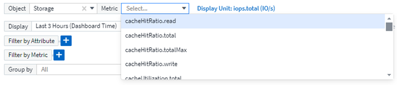
Exporter les listes Data Collector et acquisition Unit au format .CSV en sélectionnant l'icône en haut de ces pages.

Nous avons ré-organisé la page aide > support afin de trouver plus facilement ce que vous cherchez, et comme vous l'avez demandé, nous avons ajouté des liens directs sur cette page vers API swagger et la documentation utilisateur.

Links dans la colonne « trigeredOn » de la page de liste alertes, vous accédez à la page de destination appropriée, si une page de destination est disponible pour cet objet.

Voir toutes les modifications apportées à votre espace de noms
L'analyse des changements Kubernetes vous permet désormais d'afficher une chronologie des modifications lors de la sélection du cluster et de l'espace de noms. Auparavant, la charge de travail doit également avoir été sélectionnée. Lors du filtrage sur le cluster et l'espace de noms, la chronologie des modifications de tous les workloads dans cet espace de noms s'affiche sur une ligne.
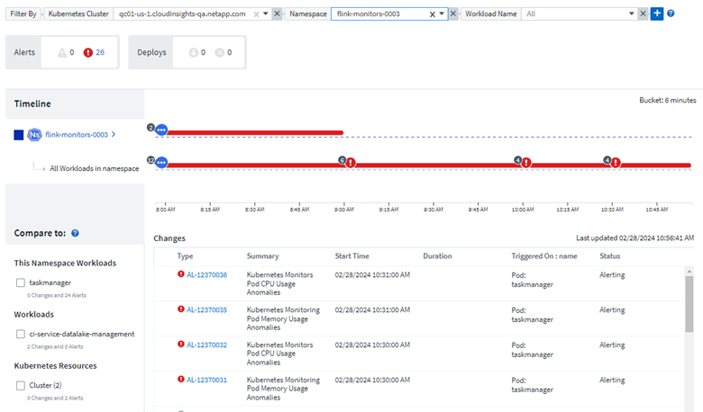
Journaux associés pour les alertes
Lors de l'affichage d'une alerte de journal, les entrées de journal associées sont affichées dans un nouveau tableau. Une entrée de journal est liée si elle se produit dans la même source et la même période que l'alerte, et est soumise aux mêmes conditions. Sélectionnez « analyser les journaux » pour en savoir plus.

Collecter les données du commutateur ONTAP
Cloud Insights peut collecter des données à partir des commutateurs back-end du système ONTAP ; il vous suffit d'activer la collecte dans la section Configuration avancée du collecteur de données et de vous assurer que le système ONTAP est configuré pour fournir "informations sur le commutateur" et a le approprié autorisations réglez.
API Data Collector de Workload Security
Dans les environnements de grande taille, vous pouvez automatiser la création du collecteur Workload Security à l'aide de la nouvelle API Data Collectors. Accédez à Admin > accès API > Documentation API et sélectionnez le type d'API Workload Security pour en savoir plus.
Janvier 2024
Essayez des fonctionnalités Cloud Insights que vous n'avez pas encore utilisées
En plus de votre essai initial de Cloud Insights, vous pouvez également profiter de "Essais de module". Par exemple, si vous êtes abonné à Cloud Insights et que vous avez surveillé le stockage et les machines virtuelles, lorsque vous ajoutez Kubernetes à votre environnement, vous essai automatique de 30 jours de l'observabilité Kubernetes. L'utilisation d'unités gérées d'observabilité Kubernetes ne compte pas sur vos droits souscrits avant la fin de la période d'essai.
Mes workloads sont-ils sains ?
L'état des workloads est disponible en un coup d'œil sur la page Kubernetes > Explore > workloads. Vous pouvez ainsi identifier rapidement les workloads qui fonctionnent correctement et ceux qui ont besoin d'aide.

Mises à jour du Data Collector
Identification Data Domain
Le collecteur Data Domain a été amélioré afin de mieux identifier les systèmes haute disponibilité pour la durabilité lors des événements de basculement. Cette modification entraînera une réidentification unique des appliances Data Domain dans les systèmes haute disponibilité, ce qui entraînera la suppression des annotations sur ces ressources (car ces baies seront réidentifiées). Vous devrez rattacher des annotations à vos objets Data Domain.
Algorithme amélioré de détection DES ransomwares par ML
Workload Security inclut un nouvel algorithme de détection de ransomware de 2e génération pour détecter les attaques les plus sophistiquées plus rapidement et de manière plus précise.
« Saisonnalité » des comportements : le comportement du week-end peut suivre des modèles différents par rapport au jour de la semaine ou au comportement du matin par rapport à l'après-midi. Les algorithmes de sécurité des workloads tiennent compte de cette saisonnalité.
Décembre 2023
Analyse des changements en un coup d'œil
Kubernetes "Analyse des changements" Vue complète des modifications récentes de votre environnement Kubernetes. Les alertes et l'état du déploiement sont à portée de main. Avec change Analytics, vous pouvez suivre chaque changement de déploiement et de configuration et le mettre en corrélation avec l'état et les performances des services, de l'infrastructure et des clusters K8s.

Tableau de bord des performances des workloads Kubernetes
Les performances des workloads sont disponibles en un coup d'œil dans le tableau de bord complet des performances des workloads Kubernetes. Affichez rapidement des graphiques des tendances Volume, débit, latence et retransmission, ainsi qu'un tableau du trafic des charges de travail pour chaque espace de noms de votre environnement. Les filtres facilitent la mise au point sur les zones d'intérêt.


Détails de la requête sur un écran
Dans une requête, la sélection d'une ligne ouvre un panneau latéral affichant les détails d'attribut, d'annotation et de mesure pour la ligne sélectionnée, fournissant des informations utiles sans avoir à explorer la page d'accueil de l'objet. Les liens de la rangée ou du panneau latéral facilitent la navigation.

Mises à jour du Data Collector :
-
Brocade FOS REST : ce collecteur est déplacé de "Preview" et est maintenant disponible en général. Quelques points à noter :
-
FOS a introduit son API REST avec FOS 8.2. Mais certaines fonctionnalités comme le routage n'ont reçu que des fonctionnalités d'API REST avec la version 9.0.
-
Si vous disposez d'une structure composée de plusieurs actifs FOS de 8.2 versions supérieures, ainsi que de moins de 8.2, le collecteur de REPOS FOS Cloud Insights ne pourra pas détecter ces anciens actifs. Vous pouvez modifier le collecteur de REPOS FOS et créer une liste séparée par des virgules de l'adresse IPv4 de ces périphériques pour exclusion de ce collecteur.
-
-
SELinux: Cloud Insights inclut des améliorations à l'installation initiale de l'unité d'acquisition Linux pour assurer la robustesse du fonctionnement dans les environnements Linux avec l'application SELinux activée. Ces améliorations n'ont qu'un impact sur les déploiements New au ; si vous rencontrez des problèmes SELinux liés aux mises à niveau au, contactez le support NetApp pour résoudre votre configuration SELinux.
Novembre 2023
Sécurité de la charge de travail : interrompre/reprendre un collecteur
Dans Workload Security, vous pouvez mettre en pause un Data Collector si le collecteur est à l'état running. Ouvrez le menu « trois points » du collecteur et sélectionnez PAUSE. Lorsque le collecteur est en pause, aucune donnée n'est collectée à partir de ONTAP et aucune donnée n'est envoyée du collecteur vers ONTAP. Sélectionnez reprendre pour recommencer la collecte.
Informations sur la prise en charge du nœud de stockage
Sur la page d'accueil d'un nœud de stockage, la section données utilisateur fournit des informations d'un coup d'œil sur votre offre de support, votre statut actuel, votre statut du support et la date de fin de garantie. Notez que Cloud Insights ne publie actuellement que ces informations pour les terminaux NetApp. Notez également que ces champs de support sont des annotations, de sorte qu'ils peuvent être utilisés dans les requêtes et les tableaux de bord.
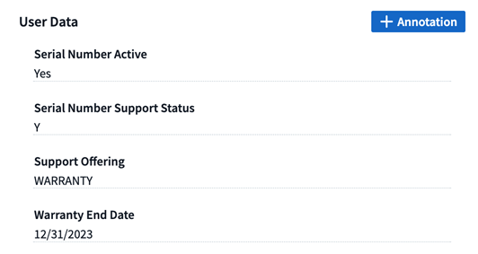
Mapper les balises VMware aux annotations Cloud Insights
Le "VMware" Le collecteur de données vous permet de remplir les annotations de texte Cloud Insights avec des balises de même nom configurées sur VMware.
Améliorations de la fiabilité du collecteur CLI Brocade pour le micrologiciel FOS 9.1.1c et supérieur
Sur certains commutateurs Brocade Fibre Channel exécutant le micrologiciel 9.1.1c, le résultat de certaines commandes de l'interface de ligne de commande peut être précédé du texte de la bannière de connexion « motd » ou des avertissements pour que les utilisateurs modifient les mots de passe par défaut. Le collecteur CLI Brocade a été amélioré pour ignorer ces deux types de texte étranger.
Avant cette amélioration, seuls les commutateurs FOS 9.1.1c sans structure virtuelle étaient susceptibles d'être détectés avec ce type de collecteur.
Octobre 2023
Sécurité améliorée des workloads
La sécurité des charges de travail a été améliorée grâce aux éléments suivants :
-
Accès refusé : la sécurité de la charge de travail s'intègre à ONTAP pour recevoir "Événements « accès refusé »" et fournissent une couche supplémentaire d'analytique et de réponses automatiques.
-
Types de fichiers autorisés : si une attaque par ransomware est détectée pour une extension de fichier connue, cette extension de fichier peut être ajoutée à un "types de fichiers autorisés" pour éviter les alertes inutiles.
Essais de module
En plus de votre essai initial de Cloud Insights, vous pouvez également profiter de "Essais de module". Par exemple, si vous êtes déjà abonné à l'observabilité de l'infrastructure, mais que vous ajoutez Kubernetes à votre environnement, vous exécuterez automatiquement un essai de 30 jours de l'observabilité Kubernetes. Vous ne serez facturé que pour l'utilisation de votre unité gérée d'observabilité Kubernetes à la fin de la période d'essai.
Restreindre l'accès aux domaines spécifiés
Les administrateurs et les propriétaires de compte ont désormais la possibilité de "Limitez l'accès Cloud Insights" aux domaines de messagerie qu'ils spécifient. Accédez à Admin > gestion des utilisateurs et sélectionnez le bouton restreindre les domaines.

Mises à jour du Data Collector
Les modifications suivantes du Data Collector/de l'unité d'acquisition sont en place :
-
Isilon / PowerScale REST : plusieurs nouveaux attributs et mesures ont été ajoutés aux capacités d'analyse améliorées de Cloud Insights sous le nom emc_isilon.node_pool.*. Ces compteurs et attributs permettent aux utilisateurs de créer des tableaux de bord et des moniteurs pour la consommation de la capacité node_pool ; les utilisateurs avec des clusters Isilon construits à partir de modèles de nœuds différents disposent de plusieurs pools de nœuds. Il est donc utile de comprendre la consommation de votre disque dur/SSD/capacité totale au niveau d'un pool de nœuds pour la surveillance et la planification.
-
Rubrik prise en charge de l'authentification « compte de service » : le collecteur Rubrik de Cloud Insights prend désormais en charge l'authentification HTTP basique (nom d'utilisateur et mot de passe) classique et l'approche de compte de service de Rubrik, qui nécessite un nom d'utilisateur + un secret + un ID d'organisation.
Septembre 2023
Trouvez facilement ce que vous voulez dans les journaux
La requête de journal (observabilité > requêtes de journal > +Nouvelle requête de journal) inclut un certain nombre de "améliorations" pour faciliter l'exploration des journaux et obtenir des informations plus utiles.
Inclure/exclure
Lors du filtrage d'une valeur, vous pouvez facilement choisir d'inclure les résultats ou exclure correspondant au filtre. La sélection de l'option « exclure » crée un filtre « NON <value> ». Vous pouvez combiner les valeurs inclure et exclure dans un seul filtre.

Requête avancée
Advanced Querying vous donne la possibilité de créer des filtres "forme libre", combinant ou excluant des valeurs en utilisant ET, PAS, OU, des caractères génériques, etc
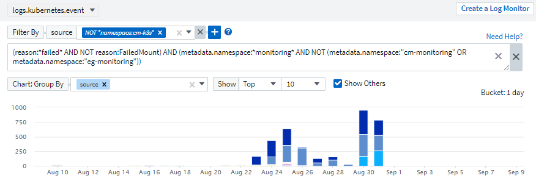
Les options « Filtrer par » et « requête avancée » sont « ET « td » ensemble pour former une seule requête. Les résultats sont affichés dans la liste de résultats et dans le graphique.
Regroupement dans le graphique
Lorsque vous sélectionnez un attribut de journal dans Grouper par, la liste et le graphique affichent les résultats du filtre actuel. Dans le graphique, colonnes regroupées en couleurs. Passez le curseur sur une colonne du graphique pour afficher des détails sur les entrées spécifiques, similaires aux informations générales affichées lorsque vous développez la légende du graphique. Dans la légende, vous pouvez également choisir de définir un filtre d'inclusion ou d'exclusion pour un regroupement spécifique.

Panneau de détails du journal « flottant »
Lors de l'exploration des journaux à l'aide de la requête de journal, la sélection d'une entrée dans la liste ouvre un panneau de détails pour cette entrée. Vous pouvez maintenant choisir d'afficher ce panneau coulissant « flottant » (c'est-à-dire affiché sur le reste de l'écran) ou « en page » (c'est-à-dire affiché comme son propre cadre dans la page). Pour basculer entre ces vues, sélectionnez le bouton « In page / Floating » dans le coin supérieur droit du panneau.

Réduire le menu
Vous pouvez réduire le menu de navigation Cloud Insights de gauche en sélectionnant le bouton « réduire » sous le menu. Lorsque le menu est réduit, passez le curseur sur une icône pour voir la section qui s'ouvre ; sélectionnez l'icône pour ouvrir le menu et accéder directement à cette section.

Améliorations du Data Collector
Cloud Insights a facilité l'affichage et la recherche des informations du collecteur de données :
-
Le traitement des listes de collecteurs de données est plus efficace, ce qui signifie que le temps nécessaire pour afficher et naviguer dans ces listes est considérablement réduit. Si vous avez un grand environnement avec de nombreux collecteurs de données, vous verrez une amélioration significative en listant vos collecteurs de données.
-
La Data Collector support Matrix est passée d'un fichier .PDF à une page .HTML, plus rapide à naviguer et plus facile à entretenir. Découvrez la nouvelle matrice ici : https://docs.netapp.com/us-en/cloudinsights/reference_data_collector_support_matrix.html
Août 2023
Collecte des journaux Isilon/PowerScale et des données d'analyse avancées
Les collecteurs REST Isilon et REST PowerScale contiennent les améliorations suivantes :
-
Les événements du journal Isilon sont disponibles pour les requêtes et les alertes
-
Les attributs Isilon Advanced Analytic peuvent être utilisés dans les requêtes, les tableaux de bord et les alertes :
-
emc_isilon.cluster
-
emc_isilon.node
-
emc_isilon.node_disk
-
emc_isilon.net_iface
-
Ils sont activés par défaut pour les utilisateurs des collecteurs REST Isilon et/ou REST PowerScale. NetApp encourage vivement les utilisateurs du collecteur basé sur l'interface de ligne de commande Isilon à migrer vers le nouveau collecteur basé sur l'API REST pour bénéficier d'améliorations, telles que celles ci-dessus.
Amélioration de la cartographie des charges de travail
La carte des charges de travail est plus utilisable et moins bruyante. Elle regroupe tous les services externes similaires en un seul nœud s'ils communiquent avec les mêmes charges de travail, ce qui réduit la complexité du graphique et facilite la compréhension de l'interconnexion des services.
La sélection d'un nœud groupé affiche un tableau détaillé avec les mesures du trafic réseau pour chaque service externe correspondant à ce nœud.
Ajustement de l'utilisation des unités gérées Kubernetes
Si une ressource de calcul est comptabilisée dans l'environnement de cluster Kubernetes par l'opérateur de surveillance NetApp Kubernetes et un collecteur de données d'infrastructure sous-jacente (par exemple, VMware), l'utilisation de ces ressources sera ajustée pour assurer le comptage le plus efficace des unités gérées. Vous pouvez afficher les ajustements des UM Kubernetes sur la page Admin > abonnement, dans les onglets Résumé et utilisation.
Onglet Résumé :

Onglet utilisation :

Modifications du collecteur/de l'acquisition :
Les modifications suivantes du Data Collector/de l'unité d'acquisition sont en place :
-
Les unités d'acquisition prennent désormais en charge RHEL 8.7.
Menus améliorés
Nous avons mis à jour le menu de navigation de gauche pour mieux prendre en charge les flux de travail de nos clients. Les nouveaux éléments de premier plan, tels que Kubernetes, accélèrent l'accès à ce dont le client a besoin, et la console d'administration consolidée prend en charge le rôle de propriétaire du locataire.
Voici quelques exemples supplémentaires de ces modifications :
-
Le menu observabilité de premier niveau présente la découverte de données, les alertes et les requêtes de journal
-
La fonctionnalité d'accès aux API pour l'observabilité et la sécurité des workloads se trouve dans un seul menu
-
De même pour les fonctionnalités d'observabilité et de notification de sécurité des workloads, désormais disponibles dans un seul menu

Voici une brève liste des fonctions que vous pouvez trouver sous chaque menu :
Observabilité :
-
Explore (tableaux de bord, requêtes relatives aux indicateurs, informations sur l'infrastructure)
-
Alertes (moniteurs et alertes)
-
Collecteurs (collecteurs de données et unités d'acquisition)
-
Requêtes de journal
-
Enrichir (annotations et règles d'annotation, applications, résolution de périphérique)
-
Création de rapports
Kubernetes :
-
Exploration de cluster et carte réseau
Sécurité des workloads :
-
Alertes
-
Médecine légale
-
Collecteurs
-
Stratégies
ONTAP Essentials :
-
La protection des données
-
Sécurité
-
Alertes
-
Infrastructures
-
Mise en réseau
-
Charges de travail
*VMware
Admin :
-
Accès aux API
-
Audit
-
Notifications
-
Informations sur l'abonnement
-
Gestion des utilisateurs
Juillet 2023
Afficher les modifications récentes
Les pages d'accueil du Data Collector incluent désormais une liste des modifications récentes. Il vous suffit de cliquer sur le bouton « modifications récentes » en bas de toute page d'accueil du collecteur de données pour afficher les modifications récentes du collecteur de données.

Améliorations pour l'opérateur
Les améliorations suivantes ont été apportées à "Opérateur Kubernetes" déploiement :
-
Option permettant de contourner la collection de mesures docker
-
Possibilité d'ajouter et de personnaliser des tolérances à des démonstrateurs et des réplicajeux telegraf
Insight : récupération du stockage à froid
Le "Récupération d'ONTAP Cold Storage Insight" FlexGroups prend désormais en charge, et est désormais disponible pour tous les clients.
Signature de l'image de l'opérateur
Pour les clients qui utilisent un référentiel privé pour leur opérateur de surveillance Kubernetes NetApp, vous pouvez désormais copier la clé publique de signature d'image lors de l'installation de l'opérateur, ce qui vous permet de confirmer l'authenticité du logiciel téléchargé. Sélectionnez le bouton Copier la clé publique de signature d'image pendant l'étape facultative pour télécharger l'image de l'opérateur dans votre référentiel privé.

Agrégation, mise en forme conditionnelle, etc. Pour les requêtes
L'agrégation, la sélection d'unité, la mise en forme conditionnelle et le renommage de colonne sont parmi les fonctionnalités les plus utiles d'un widget de tableau de bord, et ces mêmes fonctionnalités sont désormais disponibles pour "Requêtes".

Ces fonctionnalités sont disponibles dès maintenant pour les données de type intégration (Kubernetes, ONTAP Advanced Metrics, etc.) et prochainement pour les objets d'infrastructure (stockage, volume, switch, etc.).
API pour l'audit
Vous pouvez désormais utiliser une API pour interroger ou exporter des événements audités. Accédez à Admin > API Access et sélectionnez le lien API Documentation pour plus d'informations.

Data Collector : économie de Trident
Cloud Insights prend désormais en charge le pilote d'économie Trident, en bénéficiant des avantages suivants :
-
Visibilité sur le mappage qtree entre pods et ONTAP et les metrics de performance.
-
Dépannage transparent et navigation aisée des pods Kubernetes vers le stockage back-end
-
Détectez de manière proactive les problèmes de performances back-end à l'aide de moniteurs
Juin 2023
Découvrez votre utilisation
À partir de juin 2023, Cloud Insights fournit une répartition de l'utilisation des unités gérées en fonction de l'ensemble de fonctions. Vous pouvez désormais afficher et surveiller rapidement l'utilisation des unités gérées (MU) pour votre infrastructure, ainsi que l'utilisation des UM liées à Kubernetes.

La surveillance et le mappage du réseau Kubernetes sont disponibles pour tous
Le "Performances du réseau Kubernetes et mappage" Simplifie la résolution des problèmes en mappant les dépendances entre les workloads Kubernetes, offrant ainsi une visibilité en temps réel sur les latences des performances du réseau et les anomalies pour identifier les problèmes de performance avant qu'ils n'affectent les utilisateurs. De nombreux clients l'ont trouvé utile lors de l'aperçu, et maintenant il est disponible pour tous les goûts.
Modifications du collecteur/de l'acquisition :
Les modifications suivantes du Data Collector/de l'unité d'acquisition sont en place :
-
Les MU Data Domain et Cohesity sont mesurées à 40 Tio : 1 MU.
-
Les unités d'acquisition prennent désormais en charge RHEL et Rocky 9.0 et 9.1.
Nouveaux tableaux de bord ONTAP Essentials
Les tableaux de bord ONTAP Essentials suivants sont désormais disponibles dans les environnements de prévisualisation et sont désormais disponibles pour tous :
-
Tableau de bord de sécurité
-
Tableau de bord de protection des données (inclut les présentations de la protection locale et à distance)
Moniteurs système supplémentaires
Les moniteurs système suivants sont inclus avec Cloud Insights :
-
Service FCP de la machine virtuelle de stockage indisponible
-
Service iSCSI de la machine virtuelle de stockage indisponible
Mai 2023
Amélioration de l'installation des opérateurs de surveillance Kubernetes
Installation et configuration du "Opérateur de surveillance NetApp Kubernetes" est plus facile que jamais grâce aux améliorations suivantes :
-
De production "paramètres de configuration" sont conservés dans un seul fichier de configuration auto-documenté.
-
Instructions détaillées pour le téléchargement des images de l'opérateur de surveillance Kubernetes vers votre référentiel privé.
-
Simple à mettre à niveau avec une seule commande pour mettre à niveau votre système de contrôle Kubernetes tout en conservant des configurations personnalisées.
-
Sécurité accrue : les clés d'API gèrent les secrets de manière sécurisée.
-
Facilité d'intégration et de déploiement avec vos outils d'automatisation ci/CD.
Virtualisation du stockage
Cloud Insights peut différencier une baie de stockage dotée d'un stockage local ou d'une virtualisation d'autres baies de stockage. Vous pouvez ainsi établir le lien entre les coûts et distinguer les performances du stockage frontal et du stockage interne de votre infrastructure.

Nouveaux paramètres Webhook
Lors de la création d'un "Webhook" notification, vous pouvez désormais inclure ces paramètres dans votre définition de webhook :
-
%%TriggeredOnKeys%%
-
%%TriggeredOnValues%%
Reporting sur les données Kubernetes
Les données Kubernetes collectées par Cloud Insights, y compris les volumes persistants (PV), les demandes de volume persistant, les charges de travail, les clusters et les espaces de noms, sont désormais disponibles pour les fonctions de reporting, de facturation interne, de tendance, de prévision, de calculs TTF, Et autres rapports métier sur les metrics pour Kubernetes.
Moniteurs système ONTAP par défaut activés pour les nouveaux clients
De nombreux moniteurs système ONTAP sont activés (c.-à-d. repris) par défaut dans les nouveaux environnements Cloud Insights. Auparavant, la plupart des moniteurs avaient par défaut l'état Pause. Étant donné que les besoins des entreprises varient d'une entreprise à l'autre, nous vous recommandons de toujours consulter le "moniteurs système" dans votre environnement et en mettant en pause ou en reprenant chacune de ces fonctions en fonction de vos besoins en matière d'alertes.
Avril 2023
Contrôle des performances et mappage Kubernetes
Le "Performances du réseau Kubernetes et mappage" Cette fonctionnalité simplifie le dépannage en mappant les dépendances entre les workloads Kubernetes. Il fournit une visibilité en temps réel sur les latences et les anomalies des performances du réseau Kubernetes pour identifier les problèmes de performance avant qu'ils n'affectent les utilisateurs. Cette fonctionnalité aide les entreprises à réduire les coûts globaux grâce à l'analyse et à l'audit des flux de trafic Kubernetes.
Principales fonctionnalités : • la carte des workloads présente les dépendances et les flux des workloads Kubernetes, et souligne les problèmes de réseau et de performance. • Surveiller le trafic réseau entre les pods Kubernetes, les workloads et les nœuds ; identifier la source des problèmes de trafic et de latence. • Réduire les coûts globaux en analysant les entrées, les sorties, le trafic interrégional et le trafic de réseau interzone.
Carte des charges de travail affichant les détails de la diapositive :

Le contrôle et le mappage des performances Kubernetes sont disponibles en tant que "Aperçu" fonction.
Tableau de bord de sécurité ONTAP Essentials
Le "Tableau de bord de sécurité" donne une vue instantanée de votre situation en matière de sécurité et affiche des graphiques pour le chiffrement de volume matériel et logiciel, l'état anti-ransomware et les méthodes d'authentification du cluster. Le tableau de bord de sécurité est disponible en tant que "Aperçu" fonction.

Récupération du stockage à froid ONTAP
L'outil Reclaim ONTAP Cold Storage Insight fournit des données sur la capacité à froid, les économies potentielles en termes de coûts/d'énergie et les actions recommandées pour les volumes des systèmes ONTAP.
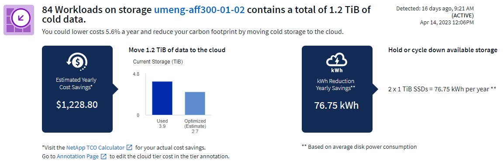
Grâce à Insight, vous pouvez répondre à des questions telles que :
-
Quelle quantité de données inactives d'un cluster de stockage se trouve sur (a) des disques SSD à coût élevé, (b) des disques durs et (c) des disques virtuels ?
-
Quelles charges de travail contribuent le plus en ce qui concerne le stockage non optimisé ?
-
Quelle est la durée (en jours) pendant laquelle les données ont été inactives sur une charge de travail donnée ?
Récupérer le stockage à froid ONTAP est considéré comme un "Aperçu" et est donc susceptible de changer.
La notification d'abonnement contrôle également les messages de bannière
La définition des destinataires pour les notifications d'abonnement (Admin > Notifications) contrôle désormais également les personnes qui verront les notifications de bannière de produit liées aux abonnements.

Le reporting a une nouvelle apparence
Vous remarquerez que les écrans de rapports Cloud Insights ont une nouvelle apparence et que certaines options de navigation ont changé. Ces écrans et modifications de navigation ont été mis à jour dans la version actuelle "Documentation relative aux rapports".

Moniteurs en pause par défaut
Notez que pour les nouveaux environnements Cloud Insights "moniteurs définis par le système" n'envoyez pas de notifications d'alerte par défaut. Vous devez activer les notifications pour tout moniteur que vous souhaitez vous alerter en ajoutant une ou plusieurs méthodes de remise pour le moniteur. Pour les environnements Cloud Insights existants, la liste des destinataires de notification global par défaut a été supprimée pour tous les moniteurs définis par le système actuellement à l'état Pause. Les notifications définies par l'utilisateur restent inchangées, tout comme les paramètres de notification pour les moniteurs définis par le système actuellement actifs.
Vous recherchez l'onglet mesure API ?
API Metering a été déplacé de la page Subscription à la page Admin > API Access.
Mars 2023
Cloud Connection pour ONTAP 9.9+ est obsolète
Le collecteur de données de Cloud Connection pour ONTAP 9.9+ est obsolète. À partir du 4 avril 2023, les collecteurs de données Cloud Connection de votre environnement ne collecteront plus les données et présenteront une erreur lors de l'interrogation. Le collecteur de données de Cloud Insights sera supprimé définitivement de dans une mise à jour ultérieure.
Avant le 4 avril 2023, il est obligatoire de configurer un nouveau collecteur de données du logiciel de gestion des données NetApp ONTAP pour tous les systèmes ONTAP actuellement collectés par Cloud Connection. "En savoir plus >>".
Janvier 2023
Nouveaux moniteurs de journaux
Nous avons ajouté près de deux douzaines de personnes "moniteurs système supplémentaires" pour signaler des liaisons d'interconnexion rompues, des problèmes de pulsation, etc. En outre, trois nouveaux moniteurs de journalisation de protection des données ont été ajoutés pour prévenir les modifications de resynchronisation automatique de SnapMirror, de la mise en miroir MetroCluster et de la resynchronisation des miroirs FabricPool.
Notez que certains de ces moniteurs seront activés par défaut ; vous devez les mettre en pause si vous ne souhaitez pas les alerter. Notez également que ces moniteurs ne sont pas configurés pour transmettre des notifications. Vous devez configurer les destinataires de notification sur ces moniteurs si vous souhaitez envoyer des alertes par e-mail ou via webhook.
Exportation .CSV pour tous les widgets de la table du tableau de bord
Il est essentiel de garantir l'accessibilité de vos données, aussi nous avons réalisé l'exportation au format .CSV disponible pour toutes les requêtes de mesures, les widgets de tableau de bord et les pages d'arrivée d'objets, quel que soit le type de données (ressource ou intégration) que vous interrorez.
Les personnalisations de données telles que la sélection de colonnes, le changement de nom des colonnes et les conversions d'unités sont désormais incluses dans la nouvelle fonctionnalité d'exportation.
Décembre 2022
Découvrez les fonctionnalités de protection par ransomware et d'autres fonctionnalités de sécurité de Cloud Insights lors de l'essai
À partir d'aujourd'hui, vous vous inscrivez à un nouvel essai de Cloud Insights et explorez des fonctionnalités de sécurité telles que la détection des attaques par ransomware et la stratégie automatisée de réponse aux blocs par les utilisateurs. Si vous ne vous êtes pas inscrit à l'essai, faites-le dès aujourd'hui !
Les workloads Kubernetes ont leur propre page d'accueil
Les workloads constituent un élément clé de votre environnement Kubernetes, et Cloud Insights fournit donc désormais des pages d'accueil pour ces charges de travail. Vous pouvez y consulter, explorer et résoudre les problèmes qui affectent vos workloads Kubernetes.

Vérifiez vos checksums
Vous nous avez demandé de vous fournir des valeurs de somme de contrôle lors de l'installation de l'agent pour Windows et Linux et nous pensons que c'est une excellente idée. Les voici donc :

Amélioration des alertes de journaux
Grouper par
Lors de la création ou de la modification d'un moniteur de journal, vous pouvez désormais définir des attributs « Grouper par » pour permettre des alertes plus ciblées. Recherchez les attributs « Grouper par » sous les paramètres de « filtre » dans la définition de votre moniteur.

Cette modification permet d'intégrer les moniteurs métriques et les moniteurs de journaux à la parité des fonctions en normalisant l'aspect « regrouper par » des définitions de moniteur. Cette parité permet aux clients de cloner/dupliquer tous moniteurs par défaut définis par le système pour une personnalisation plus poussée.
Duplication
Vous pouvez à présent cloner (dupliquer) les moniteurs change Log, Kubernetes Log et Data Collector Log. Cela crée un nouveau moniteur de journaux personnalisé que vous pouvez modifier en fonction de vos définitions spécifiques.

11 nouveaux moniteurs ONTAP par défaut couvrant SnapMirror pour la continuité de l'activité
Nous avons ajouté près d'une douzaine de nouveaux produits "moniteurs système" Pour SnapMirror for Business Continuity (SMBC), qui signale les modifications apportées aux certificats SMBC et aux médiateurs ONTAP.
Novembre 2022
Plus de 40 nouveaux moniteurs de sécurité, de collecte de données et de Cloud volumes ONTAP !
Nous avons ajouté des dizaines de nouveaux contrôles définis par système, pour vous alerter des problèmes potentiels liés à Cloud volumes, à la sécurité et à la protection des données. En savoir plus sur ces moniteurs "ici".
Octobre 2022
Détection plus précise et plus efficace des attaques par ransomware avec l'intégration autonome de ONTAP en cas de protection
Cloud Secure améliore la détection des ransomwares grâce à l'intégration avec ONTAP "Protection autonome contre les ransomwares" (ARP).
Cloud Secure reçoit des événements ONTAP ARP sur les activités potentielles du chiffrement des fichiers de volume, et
-
Met en corrélation les événements de cryptage des volumes avec l'activité des utilisateurs pour identifier qui est à l'origine des dommages,
-
Mise en place de règles de réponse automatiques pour bloquer l'attaque,
-
Identifie les fichiers affectés, ce qui permet de les récupérer plus rapidement et de mener des enquêtes sur les violations de données.
Septembre 2022
Moniteurs disponibles en édition de base
ONTAP "Moniteurs par défaut" Désormais disponible pour l'utilisation dans Cloud Insights édition de base. Cela inclut plus de 70 moniteurs d'infrastructure et 30 exemples de charge de travail.
Tableaux de bord ONTAP Power and StorageGRID
La galerie de tableaux de bord inclut un nouveau tableau de bord pour l'alimentation et la température ONTAP ainsi que quatre tableaux de bord pour StorageGRID. Si votre environnement collecte des mesures de puissance ONTAP et/ou des données StorageGRID, importez ces tableaux de bord en sélectionnant +dans Galerie.
Visibilité des seuils d'un seul coup d'œil dans les tableaux
La mise en forme conditionnelle vous permet de définir et de mettre en évidence les seuils de niveau d'avertissement et de niveau critique dans les widgets de tableau, offrant ainsi une visibilité instantanée des valeurs aberrantes et des points de données exceptionnels.

Moniteur de sécurité
Cloud Insights peut vous alerter lorsqu'il détecte que le mode FIPS est désactivé sur le système ONTAP. En savoir plus sur "Moniteurs système", Et regardez cet espace pour plus de moniteurs de sécurité, bientôt!
Discutez où vous voulez
Discutez avec un spécialiste du support NetApp depuis n'importe quel écran Cloud Insights en sélectionnant le nouveau aide > chat en ligne. L'aide est disponible à partir du « ? » dans le coin supérieur droit de l'écran.

Informations plus visibles
Si votre environnement subit un "Visibilité" Comme les ressources partagées sous stress ou Kubernetes Namespaces s'exécutant à court d'espace, les pages d'accueil des ressources affectées comprennent désormais des liens vers la conférence Insight, permettant ainsi d'accélérer l'exploration et la résolution des problèmes.
Nouveaux collecteurs de données
-
Amazon S3 (disponible dans la version préliminaire)
-
Brocade FOS 9.0.x
-
Dell/EMC PowerStore 3.0.0.0
Autres mises à jour du Data Collector
Toutes les sources de données sont désormais optimisées pour reprendre l'interrogation des performances après les mises à jour et/ou correctifs de l'unité d'acquisition.
Systèmes d'exploitation pris en charge
Les systèmes d'exploitation suivants sont pris en charge par les unités d'acquisition Cloud Insights, en plus de ceux-ci "déjà pris en charge":
-
Red Hat Enterprise Linux 8.5, 8.6
Août 2022
Le nouveau look de Cloud Insights !
À partir de ce mois-ci, "moniteur et optimisation" a été renommé observabilité. Vous trouverez ici toutes vos fonctionnalités préférées, comme Dashboards, requêtes, alertes et reporting. En outre, recherchez Cloud Secure dans le nouveau menu sécurité. Notez que seuls les menus ont changé ; la fonction reste la même.

Vous cherchez le menu aide ?
Aide maintenant vit dans le coin supérieur droit de l'écran.

Vous ne savez pas par où commencer ? Découvrez ONTAP Essentials !
"Essentiels ONTAP" Il s'agit d'un ensemble de tableaux de bord et de flux de production qui offrent des vues détaillées de vos inventaires, charges de travail et protection des données NetApp ONTAP, notamment des prévisions complètes concernant la capacité et les performances de stockage. Vous pouvez même voir si les contrôleurs fonctionnent à des taux d'utilisation élevés. ONTAP Essentials est l'endroit idéal pour tous vos besoins de surveillance NetApp ONTAP !
ONTAP Essentials, disponible dans toutes les éditions, est conçu pour être intuitif aux opérateurs et administrateurs ONTAP existants, ce qui simplifie la transition d'Active IQ Unified Manager vers les outils de gestion basés sur les services.

Les familles de données de stockage sont fusionnées
Vous en faites la demande, et maintenant vous l'avez. Les unités de données de base 2 et base-10 sont désormais combinées en une seule famille, des bits et octets aux tébibibits et téraoctets, ce qui facilite l'affichage des données sur vos tableaux de bord. Les taux de données représentent désormais une famille de personnes de taille.
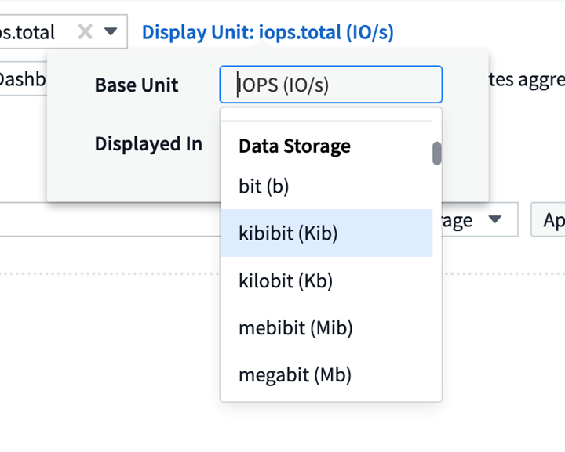
Quelle est la puissance de mon stockage ?
Affichez et contrôlez la consommation électrique, la température et la vitesse des nœuds de stockage ONTAP à l'aide des metrics netapp_ontap.Storage_shelf, netapp_ontap.system_node et netapp_ontap.cluster (consommation électrique uniquement).

Fonctions avec un dégradé de l'aperçu
Les fonctionnalités suivantes ont été déaperçu et sont désormais disponibles pour tous les clients :
Fonctionnalité |
Description |
Espaces de noms Kubernetes manque d'espace |
La Kubernetes Namespaces étant hors d'Space Insight, vous disposez d'une vue des workloads sur vos espaces de noms Kubernetes qui risquent d'être à court d'espace, avec une estimation du nombre de jours restants avant que chaque espace ne soit saturé."En savoir plus" |
Ressource partagée sous contrainte |
Shared Resource sous stress Insight utilise l'IA/ML pour identifier automatiquement les conflits de ressources entraînant une dégradation des performances dans votre environnement, mettre en évidence toutes les charges de travail impactées par celui-ci et fournir des actions recommandées pour remédier aux problèmes de performances, ce qui vous permet de résoudre plus rapidement les problèmes de performances."En savoir plus" |
Cloud Secure – bloquer l'accès des utilisateurs aux attaques |
Renforcez la protection de vos données stratégiques en vous permettant de bloquer l'accès des utilisateurs en cas d'attaque. L'accès peut être bloqué automatiquement, à l'aide de politiques de réponse automatique ou manuellement à partir des pages d'alerte ou d'informations utilisateur."En savoir plus" |
Comment ma collecte de données est-elle en bonne santé ?
Cloud Insights fournit deux nouveaux moniteurs de fréquence cardiaque pour vos unités d'acquisition, ainsi que deux moniteurs pour vous alerter des pannes de collecteur de données. Elles peuvent être utilisées pour vous alerter rapidement des problèmes liés à la collecte de données.
Les moniteurs suivants sont maintenant disponibles dans le groupe de moniteurs Data Collection :
-
Unité d'acquisition Heartbeat-Critical
-
Avertissement de pulsation de l'unité d'acquisition
-
Echec du collecteur
-
Avertissement du collecteur
Notez que ces moniteurs sont à l'état Pause par défaut. Activez-les pour être alerté des problèmes liés à la collecte des données.
Tokens de l'API de renouvellement automatique
Les tokens d'accès à l'API peuvent désormais être définis pour le renouvellement automatique. En activant cette fonction, les tokens d'accès API nouveaux/actualisés seront automatiquement générés pour les tokens arrivant à expiration. Les agents Cloud Insights qui utilisent un jeton expirant sont automatiquement mis à jour pour utiliser le token d'accès d'API correspondant, nouveau/actualisé, leur permettant ainsi de continuer à fonctionner en toute transparence. Cochez simplement la case "renouveler le jeton automatiquement" lors de la création de votre jeton. Cette fonctionnalité est actuellement prise en charge sur les agents Cloud Insights s'exécutant sur la plateforme Kubernetes avec la dernière console de surveillance NetApp Kubernetes.
Basic Edition vous donne plus qu'avant
Votre période d'essai est terminée, mais vous n'êtes pas encore sûr de savoir si un abonnement vous convient ? L'édition de base vous a toujours donné la possibilité de continuer à utiliser Cloud Insights avec votre collecteur de données ONTAP actuel, mais vous pouvez maintenant continuer à capturer la version VMware, la topologie et les données IOPS/débit/latence. Les clients NetApp bénéficiant d'un support Premium sur leurs systèmes de stockage pourront également bénéficier de la prise en charge de Cloud Insights.
Vous souhaitez en savoir plus dès maintenant ?
Consultez la section Learning Center de la page aide > support pour accéder aux liens vers les offres de cours NetApp University Cloud Insights !
Systèmes d'exploitation pris en charge
Le système d'exploitation suivant est pris en charge avec les unités d'acquisition Cloud Insights, en plus de celles-ci "déjà pris en charge":
-
Windows 11
Juin 2022
La saturation du cluster Kubernetes et d'autres détails
Cloud Insights facilite plus que jamais l'exploration de votre environnement Kubernetes. Cette page de détails de cluster amélioré fournit des informations sur la saturation et un aperçu plus précis des espaces de noms et des charges de travail.

La page de liste des clusters vous offre également un aperçu rapide de la saturation en plus du nombre de nœuds, de pods, d'espaces de noms et de workloads :
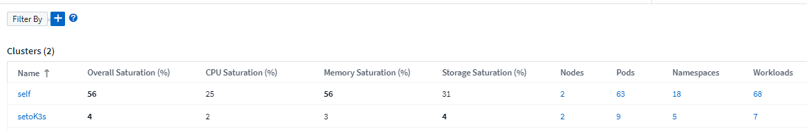
Quel est l'âge de votre cluster Kubernetes ?
Votre cluster vient-il de commencer au monde ou a-t-il connu une longue vie numérique ? Age a été ajouté sous forme de mesure de temps collectée pour les nœuds Kubernetes.

Prévision du délai avant utilisation de la capacité
Cloud Insights fournit un tableau de bord permettant de prévoir le nombre de jours avant que la capacité ne soit saturée pour chaque volume interne surveillé. Ces valeurs permettent de réduire considérablement le risque d'interruption.

Des compteurs TTF sont également disponibles pour le stockage, le pool de stockage et le volume. Consultez régulièrement cet espace pour consulter d'autres tableaux de bord correspondant à ces objets.
Notez que les prévisions de temps à temps sont déintégrées de Preview et qu'elles seront mises en service à tous les clients.
Qu'est-ce qui a changé dans mon environnement ?
Les entrées du journal des modifications ONTAP sont accessibles dans l'explorateur de journaux.
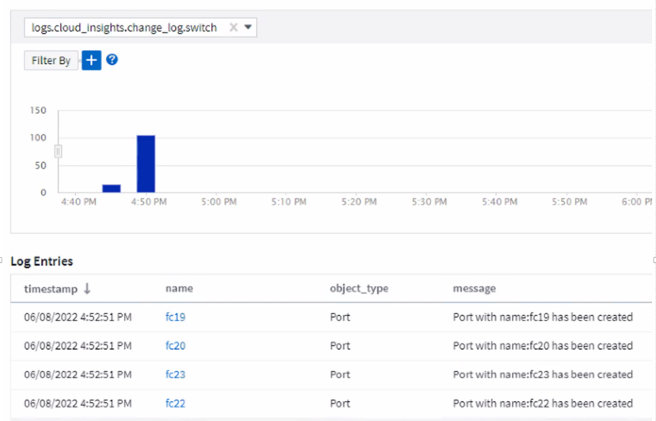
Systèmes d'exploitation pris en charge
Les systèmes d'exploitation suivants sont pris en charge par les unités d'acquisition Cloud Insights, en plus de ceux-ci "déjà pris en charge":
-
CentOS Stream 9
-
Windows 2022
Agent Telegraf mis à jour
L'agent pour l'ingestion de données d'intégration de telegraf a été mis à jour vers la version 1.22.3, avec des améliorations de performance et de sécurité. Les utilisateurs souhaitant mettre à jour peuvent se référer à la section de mise à niveau appropriée du "Installation de l'agent" documentation : Les versions précédentes de l'agent continueront de fonctionner sans qu'aucune action de l'utilisateur ne soit nécessaire.
Aperçu des fonctions
Cloud Insights met régulièrement en avant de nouvelles fonctionnalités exceptionnelles. Si vous souhaitez prévisualiser une ou plusieurs de ces fonctionnalités, contactez votre "Équipe commerciale NetApp" pour en savoir plus.
Fonctionnalité |
Description |
Espaces de noms Kubernetes manque d'espace |
La Kubernetes Namespaces étant hors d'Space Insight, vous disposez d'une vue des workloads sur vos espaces de noms Kubernetes qui risquent d'être à court d'espace, avec une estimation du nombre de jours restants avant que chaque espace ne soit saturé."En savoir plus" |
Cloud Secure : bloquer l'accès des utilisateurs aux attaques |
Renforcez la protection de vos données stratégiques en vous permettant de bloquer l'accès des utilisateurs en cas d'attaque. L'accès peut être bloqué automatiquement à l'aide de politiques de réponse automatique ou manuellement à partir des pages d'alerte ou d'informations utilisateur."En savoir plus" |
Ressource partagée sous contrainte |
Shared Resource sous stress Insight utilise l'IA/ML pour identifier automatiquement les conflits de ressources entraînant une dégradation des performances dans votre environnement, mettre en évidence toutes les charges de travail impactées par celui-ci et fournir des actions recommandées pour remédier aux problèmes de performances, ce qui vous permet de résoudre plus rapidement les problèmes de performances."En savoir plus" |
À mai 2022
Discutez en direct avec le support NetApp
Vous pouvez désormais discuter en direct avec le personnel du support NetApp. Sur la page aide > support, il vous suffit de cliquer sur l'icône Chat ou de cliquer sur Chat dans la section "Contactez-nous" pour démarrer une session Chat. L'assistance Chat est disponible en semaine pour les utilisateurs Standard et Premium Edition.

Opérateur Kubernetes
Nous avons facilité la mise en service de votre système grâce à la surveillance avancée de Kubernetes et à l'explorateur de clusters de Cloud Insights.
Le "Opérateur de surveillance NetApp Kubernetes" (NKMO) est la méthode à privilégier pour installer Kubernetes pour Cloud Insights Insights, pour une configuration plus flexible de la surveillance en moins d'étapes, ainsi que pour des opportunités améliorées de surveillance avec d'autres logiciels s'exécutant dans le cluster K8s.
Cliquez sur le lien ci-dessus pour obtenir plus d'informations et les conditions préalables
Gestion des utilisateurs et des invitations à l'aide d'une API
Vous pouvez désormais gérer des utilisateurs et des invitations à l'aide de la puissante API de Cloud Insights. Pour en savoir plus, consultez le "Documentation API swagger".
Alertes de collecte de données
Ne manquez pas les mesures critiques en raison d'un collecteur défectueux !
Il est plus facile que jamais de garder une trace de vos collecteurs de données avec de nouveaux "alertes" pour les défaillances du collecteur de données et de l'unité d'acquisition. Notez que ces moniteurs sont Pause par défaut. Pour l'activer, accédez à la page moniteurs et localisez et reprenez “Arrêt de l'unité d'acquisition” et “échec du collecteur”.
Alertes sur les modifications du stockage ONTAP
Ne laissez pas des modifications de stockage inattendues se traduire par des pannes !
Vous pouvez désormais configurer le Cloud Insights de manière à ce qu'il vous alerte lorsque des modifications ou des suppressions de volumes FlexVol, de nœuds et de SVM sont détectés sur les systèmes ONTAP.
Aperçu des fonctions
Cloud Insights met régulièrement en avant de nouvelles fonctionnalités exceptionnelles. Si vous souhaitez prévisualiser une ou plusieurs de ces fonctionnalités, contactez votre "Équipe commerciale NetApp" pour en savoir plus.
Fonctionnalité |
Description |
Espaces de noms Kubernetes manque d'espace |
La Kubernetes Namespaces étant hors d'Space Insight, vous disposez d'une vue des workloads sur vos espaces de noms Kubernetes qui risquent d'être à court d'espace, avec une estimation du nombre de jours restants avant que chaque espace ne soit saturé."En savoir plus" |
Prévision de la durée totale de la capacité du volume et du volume interne |
Cloud Insights est capable de programmer le nombre de jours jusqu'à ce que la capacité soit insuffisante pour chaque volume interne et volume surveillé. Cette valeur permet de réduire considérablement le risque d'interruption. |
Cloud Secure : bloquer l'accès des utilisateurs aux attaques |
Renforcez la protection de vos données stratégiques en vous permettant de bloquer l'accès des utilisateurs en cas d'attaque. L'accès peut être bloqué automatiquement à l'aide de politiques de réponse automatique ou manuellement à partir des pages d'alerte ou d'informations utilisateur."En savoir plus" |
Ressource partagée sous contrainte |
Shared Resource sous stress Insight utilise l'IA/ML pour identifier automatiquement les conflits de ressources entraînant une dégradation des performances dans votre environnement, mettre en évidence toutes les charges de travail impactées par celui-ci et fournir des actions recommandées pour remédier aux problèmes de performances, ce qui vous permet de résoudre plus rapidement les problèmes de performances."En savoir plus" |
Avril 2022
Faites-nous part de vos commentaires !
Nous souhaitons que votre avis nous aide à façonner Cloud Insights. Gagnez des points et remportez des prix en participant au programme Insights to action de NetApp. "Inscrivez-vous maintenant"!
Editeur de tableau de bord mis à jour
Nous avons révisé nos outils de création de tableau de bord pour vous permettre de visualiser plus facilement vos données encore plus rapidement. Accédez à la page “tableaux de bord” de Cloud Insights pour modifier un tableau de bord existant, en ajouter un à partir de notre galerie de tableaux de bord, ou créez un nouveau tableau de bord de votre choix pour le consulter.

Une nouvelle méthode d'agrégation Count a également été introduite. Lors du regroupement de données dans des graphiques à barres, des graphiques à colonnes et des widgets de graphique à secteurs, vous pouvez afficher rapidement et facilement le nombre d'objets pertinents pour la mesure sélectionnée.

En outre, les graphiques en ligne vous permettent désormais de sélectionner l'un des trois "interpolation" méthodes :
-
Aucun - aucune interpolation n'est effectuée
-
Linéaire - interpole un point de données entre les points existants
-
Stepper utilise le point de données précédent comme point de données interpolé
Amélioration de la surveillance de votre infrastructure Kubernetes
Cloud Insights vous tient au fait des modifications apportées à votre environnement Kubernetes en vous alertant lorsque des pods, des demi-déployer et des réplicats sont créés ou supprimés, ainsi que lorsque de nouveaux déploiements sont créés. Kubernetes surveille par défaut l'état pause. Vous devez donc activer uniquement ceux dont vous avez besoin.
Aperçu des fonctions
Cloud Insights met régulièrement en avant de nouvelles fonctionnalités exceptionnelles. Si vous souhaitez prévisualiser une ou plusieurs de ces fonctionnalités, contactez votre "Équipe commerciale NetApp" pour en savoir plus.
Fonctionnalité |
Description |
Prévision de la durée totale de la capacité du volume et du volume interne |
Cloud Insights est capable de programmer le nombre de jours jusqu'à ce que la capacité soit insuffisante pour chaque volume interne et volume surveillé. Cette valeur permet de réduire considérablement le risque d'interruption. |
Cloud Secure : bloquer l'accès des utilisateurs aux attaques |
Renforcez la protection de vos données stratégiques en vous permettant de bloquer l'accès des utilisateurs en cas d'attaque. L'accès peut être bloqué automatiquement à l'aide de politiques de réponse automatique ou manuellement à partir des pages d'alerte ou d'informations utilisateur."En savoir plus" |
Ressource partagée sous contrainte |
Les ressources partagées soumises à contrainte utilisent l'IA/ML pour identifier automatiquement les conflits de ressources entraînant une dégradation des performances dans votre environnement, mettre en évidence toutes les charges de travail impactées et fournir des actions recommandées pour résoudre les problèmes de performances plus rapidement."En savoir plus" |
Nouveau Data Collector
-
Cohesity SmartFiles - ce collecteur BASÉ sur les API REST acquerra un cluster Cohesity, découvrant les « vues » (sous la forme de volumes internes ci), les différents nœuds, ainsi que les mesures de performance.
Autres mises à jour du Data Collector
La collecte et l'affichage des données de performances ont été améliorés sur les collecteurs de données suivants :
-
CLI Brocade
-
Dell/EMC VPLEX, PowerStore, Isilon/PowerScale, VNX Block/CLARiiON CLI, XtremIO, Unity/VNXe
-
FlashArray de Pure Storage
Ces améliorations de performances sont déjà disponibles dans tous les collecteurs de données NetApp, ainsi que VMware et Cisco, et seront déployés sur tous les autres collecteurs de données au cours des prochains mois.
Mars 2022
Connexion cloud pour ONTAP 9.9+
Le "Connexion cloud NetApp pour ONTAP 9.9+" le collecteur de données élimine le besoin d'installer une unité d'acquisition externe, ce qui simplifie le dépannage, la maintenance et le déploiement initial.
Nouveau FSX pour moniteurs ONTAP NetApp
La surveillance de votre système FSX pour l'environnement NetApp ONTAP est très simple avec un nouveau système "moniteurs définis par le système" pour l'infrastructure (metrics) et les workloads (journaux).


Nouvelles fonctionnalités de Cloud Secure disponibles à tous
Votre environnement est plus sécurisé que jamais grâce aux fonctionnalités Cloud Secure suivantes :
Fonctionnalité |
Description |
Destruction de données – détection d'une attaque de suppression de fichier |
Détectez les activités anormales de suppression de fichiers à grande échelle, bloquez l'accès aux fichiers malveillants par des utilisateurs malveillants et prenez des snapshots automatiques avec des règles de réponse automatiques. |
Notifications séparées pour les avertissements et les alertes |
Des notifications d'avertissement et d'alerte peuvent être envoyées à des destinataires distincts, ce qui permet à l'équipe appropriée de rester informée |
Agent Telegraf mis à jour
L'agent pour l'ingestion de données d'intégration de telegraf a été mis à jour vers la version 1.21.2, avec des améliorations de performance et de sécurité. Les utilisateurs souhaitant mettre à jour peuvent se référer à la section de mise à niveau appropriée du "Installation de l'agent" documentation : Les versions précédentes de l'agent continueront de fonctionner sans qu'aucune action de l'utilisateur ne soit nécessaire.
Mises à jour du Data Collector
-
Le collecteur de données des commutateurs Fibre Channel Broadcom a été optimisé pour réduire le nombre de commandes CLI émises à chaque interrogation d'inventaire.
Février 2022
Cloud Insights corrige les vulnérabilités Apache Log4j
La sécurité client est une priorité chez NetApp. Cloud Insights inclut des mises à jour de ses bibliothèques logicielles pour corriger les vulnérabilités Apache Log4j récentes.
Reportez-vous à la liste suivante sur le site Web de l'avis de sécurité des produits de NetApp :
Vous pouvez en savoir plus sur ces failles et la réponse de NetApp à la "Communiqués NetApp".
Page de détails de l'espace de noms Kubernetes
Il vaut mieux étudier votre environnement Kubernetes, avec des pages détaillées pour les espaces de noms de votre cluster. La page de détails de l'espace de noms présente un récapitulatif de toutes les ressources utilisées par un espace de nom, notamment l'ensemble des ressources de stockage back-end et leur utilisation de la capacité.

Décembre 2021
Intégration plus étroite pour les systèmes ONTAP
Simplifiez les alertes en cas de défaillances matérielles ONTAP et davantage grâce à une nouvelle intégration avec le système de gestion des événements (EMS) de NetApp."Exploration et alerte" Messages ONTAP bas de gamme dans Cloud Insights pour informer et améliorer les workflows de dépannage et réduire encore davantage la dépendance aux outils de gestion des éléments ONTAP.
Interrogation des journaux
Pour les systèmes ONTAP, les requêtes Cloud Insights peuvent prendre en compte toute une puissance "Explorateur de journaux", Vous permettant d'étudier et de dépanner facilement les entrées de log EMS.

Notifications au niveau du Data Collector.
En plus des moniteurs définis par le système et personnalisés pour l'alerte, vous pouvez également définir des notifications d'alerte pour les collecteurs de données ONTAP, ce qui vous permet de spécifier des destinataires pour les alertes de niveau collecteur, indépendamment des autres alertes de moniteur.
Une plus grande flexibilité des rôles Cloud Secure
Ils peuvent obtenir l'accès aux fonctionnalités Cloud Secure selon la "rôles" défini par un administrateur :
Rôle |
Accès à Cloud Secure |
Administrateur |
Peut exécuter toutes les fonctions Cloud Secure, y compris celles pour les alertes, les médico-événements, les collecteurs de données, les règles de réponse automatisées et les API pour Cloud Secure. Un administrateur peut également inviter d'autres utilisateurs, mais peut uniquement attribuer des rôles Cloud Secure. |
Utilisateur |
Peut afficher et gérer des alertes et afficher des informations judiciaires. Le rôle de l'utilisateur peut modifier l'état des alertes, ajouter une note, effectuer des snapshots manuellement et bloquer l'accès des utilisateurs. |
Invité |
Peut afficher les alertes et les analyses approfondies. Le rôle invité ne peut pas modifier le statut des alertes, ajouter une note, effectuer des snapshots manuellement ou bloquer l'accès des utilisateurs. |
Systèmes d'exploitation pris en charge
Le support CentOS 8.x est remplacé par le support CentOS 8 Stream. CentOS 8.x atteindra fin de vie le 31 décembre 2021.
Mises à jour du Data Collector
Un certain nombre de noms de collecteurs de données Cloud Insights ont été ajoutés pour tenir compte des changements apportés au fournisseur :
Fournisseur/modèle |
Nom précédent |
Dell EMC PowerScale |
Isilon |
HPE Alletra 9000 / Primera |
3PAR |
HPE Alletra 6000 |
Nimble |
Novembre 2021
Tableaux de bord adaptatifs
Nouvelles variables pour les attributs et la possibilité d'utiliser des variables dans les widgets.
Les tableaux de bord sont désormais plus puissants et plus flexibles que jamais. Créez des tableaux de bord adaptatifs avec des variables d'attributs pour filtrer rapidement les tableaux de bord à la volée. Utilisation de ces éléments et d'autres pré-existants "variables" vous pouvez désormais créer un tableau de bord général qui affiche les metrics de l'ensemble de votre environnement et les filtrer par nom, type, emplacement, etc. de manière fluide. Utilisez des variables de nombre dans les widgets pour associer des métriques brutes à des coûts, par exemple le coût par Go pour le stockage à la demande.


Accéder à la base de données de rapports via l'API
Fonctionnalités améliorées d'intégration avec les outils tiers de reporting, ITSM et d'automatisation : la puissance de Cloud Insights "API" Permet aux utilisateurs d'interroger directement la base de données Cloud Insights Reporting sans passer par l'environnement Cognos Reporting.
Tableaux POD sur la page d'accueil de VM
Navigation transparente entre les machines virtuelles et les pods Kubernetes en utilisant ces pods : dans le cadre d'améliorations au niveau du dépannage et de la gestion de la marge de performances, un tableau des pods Kubernetes associés apparaîtra désormais sur les pages d'accueil des machines virtuelles.

Mises à jour du Data Collector
-
ECS crée désormais des rapports sur le firmware pour le stockage et le nœud
-
Isilon a amélioré la détection des invites
-
Azure NetApp Files collecte plus rapidement les données de performances
-
StorageGRID prend désormais en charge les authentifications uniques (SSO)
-
L'CLI Brocade signale correctement le modèle pour X&-4
D'autres systèmes d'exploitation sont pris en charge
L'unité d'acquisition Cloud Insights prend en charge les systèmes d'exploitation suivants, en plus de ceux déjà pris en charge :
-
CentOS (64 bits) 8.4
-
Oracle Enterprise Linux (64 bits) 8.4
-
Red Hat Enterprise Linux (64 bits) 8.4
Octobre 2021
Filtres sur les pages de l'Explorateur K8S
"Kubernetes Explorer" Les filtres de page vous permettent de contrôler de manière ciblée les données affichées pour l'exploration des clusters, des nœuds et des pods Kubernetes.

Données K8s pour la création de rapports
Les données Kubernetes sont désormais disponibles dans le reporting pour vous permettre de créer des rapports de refacturation ou d'autres rapports. Pour que les données de facturation interne Kubernetes soient transmises au service de reporting, vous devez disposer d'une connexion active à et Cloud Insights doit recevoir des données de, de votre cluster Kubernetes et de son stockage interne. Si aucune donnée n'est reçue du système de stockage interne, Cloud Insights ne peut pas envoyer les données d'objet Kubernetes au reporting.

Le thème sombre est arrivé
Beaucoup d'entre vous ont demandé un thème sombre, et Cloud Insights a répondu. Pour basculer entre thème clair et thème foncé, cliquez sur la liste déroulante à côté de votre nom d'utilisateur.

Prise en charge du Data Collector
Nous avons apporté quelques améliorations aux collecteurs de données Cloud Insights. Voici quelques points forts :
-
Nouveau collecteur pour Amazon FSX pour ONTAP
Septembre 2021
Les règles de performance sont désormais des moniteurs
Des moniteurs et des alertes ont supplanté les règles de performance et les violations dans l'ensemble de l'environnement Cloud Insights. "Alertes avec les moniteurs" bénéficiez d'une plus grande flexibilité et d'informations sur les problèmes ou les tendances potentiels de votre environnement.
Suggestions complètes, caractères génériques et expressions dans moniteurs
Lors de la création d'un contrôle des alertes, la saisie dans un filtre est désormais prédictive, ce qui vous permet de rechercher et de trouver facilement les mesures ou attributs de votre moniteur. En outre, vous avez la possibilité de créer un filtre générique basé sur le texte que vous saisissez.

Agent Telegraf mis à jour
L'agent pour l'ingestion de données d'intégration de telegraf a été mis à jour vers la version 1.19.3, avec des améliorations de performance et de sécurité. Les utilisateurs souhaitant mettre à jour peuvent se référer à la section de mise à niveau appropriée du "Installation de l'agent" documentation : Les versions précédentes de l'agent continueront de fonctionner sans qu'aucune action de l'utilisateur ne soit nécessaire.
Prise en charge du Data Collector
Nous avons apporté quelques améliorations aux collecteurs de données Cloud Insights. Voici quelques points forts :
-
Le collecteur Hyper-V de Microsoft utilise désormais PowerShell à la place de WMI
-
Les machines virtuelles Azure et le collecteur du VHD sont désormais 10 fois plus rapides en raison d'appels parallèles
-
HPE Nimble prend désormais en charge les configurations fédérées et iSCSI
Et puisque nous améliorons toujours la collecte de données, voici d'autres changements récents à noter :
-
Nouveau collecteur pour EMC Powerstore
-
Nouveau collecteur pour Hitachi Ops Center
-
Nouveau collecteur pour Hitachi Content Platform
-
Collecteur ONTAP amélioré pour générer des rapports sur les pools de structure
-
ANF améliorée avec les performances du pool de stockage et des volumes
-
EMC ECS amélioré avec les performances de stockage et de nœuds de stockage, ainsi que le nombre d'objets dans des compartiments
-
EMC Isilon amélioré avec des mesures de nœud de stockage et qtree
-
Amélioration d'EMC Symetrix avec des mesures de limite de QoS sur volume
-
IBM SVC et EMC PowerStore amélioré avec le numéro de série parent des nœuds de stockage
Août 2021
Nouvelle interface utilisateur de la page d'audit
Le "Page d'audit" Fournit une interface plus propre et permet maintenant l'exportation d'événements d'audit vers un fichier .CSV.
Gestion améliorée des rôles utilisateur
Cloud Insights offre désormais une plus grande liberté pour l'attribution des rôles utilisateur et des contrôles d'accès. Les utilisateurs peuvent désormais se voir attribuer des autorisations granulaires pour la surveillance, le reporting et Cloud Secure séparément.
Vous pouvez ainsi autoriser davantage d'utilisateurs à accéder à des fonctions de surveillance, d'optimisation et de création de rapports tout en limitant l'accès à vos données d'activité et d'audit Cloud Secure sensibles à ceux qui en ont besoin.
"En savoir plus" Sur les différents niveaux d'accès dans la documentation Cloud Insights.
Juin 2021
Suggestions, caractères génériques et expressions dans filtres
Avec cette version de Cloud Insights, vous n'avez plus besoin de connaître tous les noms et valeurs possibles pour filtrer les résultats d'une requête ou d'un widget. Lors du filtrage, il vous suffit de commencer à taper et Cloud Insights suggère des valeurs en fonction de votre texte. Fini les attentes liées aux applications et aux attributs Kubernetes à l'avance, juste pour trouver ceux que vous voulez afficher dans votre widget.
Lorsque vous tapez un filtre, le filtre affiche une liste intelligente des résultats que vous pouvez choisir, ainsi que l'option permettant de créer un filtre générique en fonction du texte actuel. Si vous sélectionnez cette option, tous les résultats correspondant à l'expression de caractère générique seront résélectionnés. Vous pouvez bien sûr sélectionner plusieurs valeurs individuelles que vous souhaitez ajouter au filtre.

En outre, vous pouvez créer expressions dans un filtre à l'aide DE NOT ou, ou sélectionner l'option « aucun » pour filtrer les valeurs nulles dans le champ.
En savoir plus sur "options de filtrage" dans requêtes et widgets.
API disponibles par édition
Les puissantes API de Cloud Insights sont plus accessibles que jamais, avec les API d'alertes désormais disponibles dans les éditions Standard et Premium. Les API suivantes sont disponibles pour chaque édition :
| Catégorie API | Basique | Standard | Premium |
|---|---|---|---|
Unité d'acquisition |
|
|
|
Collecte de données |
|
|
|
Alertes |
|
|
|
Ressources |
|
|
|
Ingestion des données |
|
|

Visibilité sur les volumes persistants et pod pour Kubernetes
Cloud Insights fournit une visibilité sur le stockage back-end de vos environnements Kubernetes, ce qui vous donne des informations exploitables sur vos pods Kubernetes et vos volumes persistants. Vous pouvez désormais suivre les compteurs PV tels que les IOPS, la latence et le débit, depuis l'utilisation d'un seul pod via un compteur PV vers un PV et jusqu'au périphérique de stockage interne.
Sur une page d'accueil Volume ou Internal Volume, deux nouvelles tables sont affichées :


Notez que pour tirer parti de ces nouvelles tables, il est recommandé de désinstaller votre agent Kubernetes actuel afin de l'installer à nouveau. Vous devez également installer Kube-State-Metrics version 2.1.0 ou ultérieure.
Liens entre un nœud Kubernetes et une machine virtuelle
Sur une page Kubernetes Node, vous pouvez maintenant cliquer sur pour ouvrir la page VM du nœud. La page VM comprend également un lien de retour vers le nœud lui-même.


Moniteurs d'alertes remplacement des règles de performance
Pour bénéficier des avantages supplémentaires de la distribution de plusieurs seuils, de l'alerte Web et par e-mail, de l'alerte sur toutes les mesures à l'aide d'une interface unique, et plus encore, Cloud Insights convertit les clients de l'édition Standard et Premium de stratégies de performance en moniteurs pendant les mois de juillet et août 2021. En savoir plus sur "Alertes et moniteurs", et restez à l'affût de ce changement passionnant.
Cloud Secure prend en charge NFS
Cloud Secure prend désormais en charge NFS pour la collecte de données ONTAP. Surveillez l'accès des utilisateurs SMB et NFS pour protéger vos données contre les attaques par ransomware. De plus, Cloud Secure prend en charge les répertoires des utilisateurs Active-Directory et LDAP pour la collecte d'attributs utilisateur NFS.
Suppression du snapshot Cloud Secure
Cloud Secure supprime automatiquement les snapshots en fonction des paramètres de purge des snapshots, pour économiser de l'espace de stockage et réduire la suppression manuelle des snapshots.

Vitesse de collecte des données Cloud Secure
Un seul système d'agent de collecte de données peut désormais publier jusqu'à 20,000 événements par seconde sur Cloud Secure.
À mai 2021
Voici quelques-uns des changements apportés en avril :
Agent Telegraf mis à jour
L'agent pour l'ingestion de données d'intégration de telegraf a été mis à jour vers la version 1.17.3, avec des améliorations de performance et de sécurité. Les utilisateurs souhaitant mettre à jour peuvent se référer à la section de mise à niveau appropriée du "Installation de l'agent" documentation : Les versions précédentes de l'agent continueront de fonctionner sans qu'aucune action de l'utilisateur ne soit nécessaire.
Ajouter des actions correctives à une alerte
Vous pouvez maintenant ajouter une description facultative ainsi que des informations supplémentaires et/ou des actions correctives lors de la création ou de la modification d'un moniteur en remplissant la section Ajouter une description d'alerte. La description sera envoyée avec l'alerte. Le champ Insights et actions correctives peut fournir des étapes détaillées et des conseils sur la gestion des alertes et sera affiché dans la section récapitulative de la page d'arrivée de l'alerte.

API Cloud Insights pour toutes les éditions
L'accès API est désormais disponible dans toutes les éditions de Cloud Insights. Les utilisateurs de l'édition Basic peuvent désormais automatiser les actions pour les unités d'acquisition et les collecteurs de données, tandis que les utilisateurs de l'édition Standard peuvent interroger des mesures et récupérer des mesures personnalisées. L'édition Premium continue d'autoriser l'utilisation complète de toutes les catégories d'API.
| Catégorie API | Basique | Standard | Premium |
|---|---|---|---|
Unité d'acquisition |
|
|
|
Collecte de données |
|
|
|
Ressources |
|
|
|
Ingestion des données |
|
|
|
Entrepôt de données |
|
Pour plus de détails sur l'utilisation de l'API, reportez-vous au "Documentation API".
Avril 2021
Gestion simplifiée des moniteurs
"Regroupement du moniteur" simplifie la gestion des moniteurs dans votre environnement. Plusieurs moniteurs peuvent désormais être regroupés et mis en pause en un seul. Par exemple, si une mise à jour est effectuée sur une pile d'infrastructure, vous pouvez interrompre les alertes de tous ces périphériques en un clic.
Les groupes de moniteurs sont la première partie d'une nouvelle fonctionnalité intéressante qui améliore la gestion des périphériques ONTAP pour Cloud Insights.

Options d'alerte améliorées à l'aide de Webpatères
La prise en charge de nombreuses applications commerciales "Crochets en ligne" en tant qu'interface d'entrée standard. Cloud Insights prend désormais en charge la plupart de ces canaux de distribution, fournissant des modèles par défaut pour Slack, PagerDuty, Teams et discorde, en plus de fournir des crochets génériques personnalisables pour prendre en charge de nombreuses autres applications.

Identification améliorée des périphériques
Pour améliorer la surveillance et le dépannage ainsi que fournir des rapports précis, il est utile de comprendre le nom des appareils plutôt que leur adresse IP ou d'autres identificateurs. Cloud Insights intègre désormais un moyen automatique d'identifier les noms des périphériques de stockage et hôtes physiques de l'environnement, par le biais d'une approche basée sur des règles appelée "Résolution de périphérique", Disponible dans le menu gérer.
Vous en avez demandé plus !
Les clients ont souvent demandé plus d'options par défaut pour visualiser la plage de données. Nous avons donc ajouté les cinq nouveaux choix suivants qui sont désormais disponibles dans tout le service via le sélecteur de plage horaire :
-
Dernières 30 minutes
-
Dernières 2 heures
-
Dernières 6 heures
-
Dernières 12 heures
-
2 derniers jours
Plusieurs abonnements dans un environnement Cloud Insights
À partir du 2 avril, Cloud Insights prend en charge plusieurs abonnements du même type d'édition pour un client dans une seule instance Cloud Insights. Vous pouvez ainsi acquérir des éléments à terme de votre abonnement Cloud Insights en utilisant l'infrastructure. Contactez le service commercial NetApp pour obtenir de l'aide sur plusieurs abonnements.
Choisissez votre voie
Lors de la configuration de Cloud Insights, vous pouvez désormais choisir de commencer par surveiller et alertes ou par détection des attaques par ransomware et internes. Cloud Insights configurera votre environnement de départ en fonction du chemin que vous choisissez. Vous pouvez configurer l'autre chemin à tout moment.
Intégration Cloud Secure plus simple
En outre, vous pouvez commencer à utiliser Cloud Secure avec une nouvelle checklist de configuration détaillée.

Comme toujours, nous aimons entendre vos suggestions! Envoyez-les à ng-cloudinsights-customerfeedback@netapp.com.
Février 2021
Agent Telegraf mis à jour
L'agent pour l'ingestion de données d'intégration de telegraf a été mis à jour vers la version 1.17.0, qui inclut des correctifs de vulnérabilité et de bogues.
Analyseur de coût du cloud
Découvrez la puissance de Spot by NetApp avec le coût du cloud, une solution détaillée "analyse des coûts" des dépenses passées, présentes et estimées, qui offrent une meilleure visibilité sur l'utilisation du cloud dans votre environnement. Le tableau de bord des coûts du cloud offre une vue claire des dépenses du cloud ainsi qu'un aperçu détaillé des charges de travail, des comptes et des services individuels.
Le coût du cloud peut relever les défis majeurs suivants :
-
Suivi et contrôle des dépenses liées au cloud
-
Identification des déchets et des zones d'optimisation potentielles
-
Livraison d'éléments d'action exécutables
Le coût du cloud est axé sur la surveillance. Passez au compte point complet de NetApp pour réaliser des économies automatiques et optimiser l'environnement.
Recherche d'objets ayant des valeurs nulles à l'aide de filtres
Cloud Insights permet désormais de rechercher des attributs et des mesures ayant des valeurs nulles/non via l'utilisation de filtres. Vous pouvez effectuer ce filtrage à tous les attributs/metrics dans les emplacements suivants :
-
Sur la page requête
-
Dans les widgets de tableau de bord et les variables de page
-
Sur la page de liste des alertes
-
Lors de la création de moniteurs
Pour filtrer les valeurs NULL/None, il vous suffit de sélectionner l'option None lorsqu'elle apparaît dans la liste déroulante du filtre approprié.

Prise en charge multi-région
À partir d'aujourd'hui, nous proposons le service Cloud Insights dans différentes régions du monde, qui améliore les performances et la sécurité des clients situés en dehors des États-Unis. Cloud Insights/Cloud Secure stocke des informations en fonction de la région dans laquelle votre environnement est créé.
Cliquez sur "ici" pour en savoir plus.
Janvier 2021
Mesures ONTAP supplémentaires renommées
Dans le cadre de nos efforts continus en vue d'améliorer l'efficacité de la collecte de données à partir des systèmes ONTAP, les mesures ONTAP suivantes ont été renommées.
Si vous disposez de widgets de tableau de bord ou de requêtes utilisant l'une de ces mesures, vous devrez les modifier ou les recréer pour utiliser les nouveaux noms de mesures.
| Nom de l'audit précédent | Nouveau nom de mesure |
|---|---|
netapp_ontap.disque_composant.total_transferts |
netapp_ontap.disk_composant.total_iops |
netapp_ontap.disk.total_transferts |
netapp_ontap.disk.total_iops |
netapp_ontap.fcp_lif.read_data |
netapp_ontap.fcp_lif.read_débit |
netapp_ontap.fcp_lif.write_data |
netapp_ontap.fcp_lif.débit_écriture |
netapp_ontap.iscsi_lif.read_data |
netapp_ontap.iscsi_lif.débit_lecture |
netapp_ontap.iscsi_lif.write_data |
netapp_ontap.iscsi_lif.débit_écriture |
netapp_ontap.lif.recv_data |
débit_netapp_ontap.lif.recv_recv |
netapp_ontap.lif.sent_data |
netapp_ontap.lif.sent_throughput |
netapp_ontap.lun.read_data |
netapp_ontap.lun.débit_lecture |
netapp_ontap.lun.write_data |
netapp_ontap.lun.débit_écriture |
netapp_ontap.nic_common.rx_bytes |
netapp_ontap.nic_common.rx_débit |
netapp_ontap.nic_common.tx_bytes |
netapp_ontap.nic_common.tx_débit |
netapp_ontap.path.read_data |
netapp_ontap.path.read_débit |
netapp_ontap.path.write_data |
netapp_ontap.path.write_débit |
netapp_ontap.path.total_des_données |
netapp_ontap.path.débit_total |
netapp_ontap.policy_group.read_data |
netapp_ontap.policy_group.débit_lecture |
netapp_ontap.policy_group.write_data |
netapp_ontap.policy_group.débit_écriture |
netapp_ontap.policy_group.autres_données |
netapp_ontap.policy_group.autre_débit |
netapp_ontap.policy_group.total_data |
netapp_ontap.policy_group.total_débit |
netapp_ontap.system_node.disk_data_read |
netapp_ontap.system_node.disk_débit_lecture |
netapp_ontap.system_node.disk_data_wleged |
netapp_ontap.system_node.disk_débit_écrit |
netapp_ontap.system_node.hdd_data_read |
netapp_ontap.system_node.hdd_débit_lecture |
netapp_ontap.system_node.hdd_data_écrit |
netapp_ontap.system_node.hdd_débit_écrit |
netapp_ontap.system_node.ssd_data_read |
netapp_ontap.system_node.ssd_débit_lecture |
netapp_ontap.system_node.ssd_data_wleged |
netapp_ontap.system_node.ssd_débit_écrit |
netapp_ontap.system_node.net_data_recv |
netapp_ontap.system_node.net_throughput_recv |
netapp_ontap.system_node.net_data_sent |
netapp_ontap.system_node.net_throughput_sent |
netapp_ontap.system_node.fcp_data_recv |
netapp_ontap.system_node.fcp_recv |
netapp_ontap.system_node.fcp_data_sent |
netapp_ontap.system_node.fcp_débit_envoyé |
netapp_ontap.volume_node.cifs_read_data |
netapp_ontap.volume_node.cifs_read_débit |
netapp_ontap.volume_node.cifs_write_data |
netapp_ontap.volume_node.cifs_écriture_débit |
netapp_ontap.volume_node.nfs_read_data |
netapp_ontap.volume_node.nfs_read_débit |
netapp_ontap.volume_node.nfs_write_data |
netapp_ontap.volume_node.nfs_write_débit |
netapp_ontap.volume_node.iscsi_read_data |
netapp_ontap.volume_node.iscsi_read_débit |
netapp_ontap.volume_node.iscsi_write_data |
netapp_ontap.volume_node.iscsi_write_débit |
netapp_ontap.volume_node.fcp_read_data |
netapp_ontap.volume_node.fcp_read_débit |
netapp_ontap.volume_node.fcp_write_data |
netapp_ontap.volume_node.fcp_write_débit |
netapp_ontap.volume.read_data |
netapp_ontap.volume.débit_lecture |
netapp_ontap.volume.write_data |
netapp_ontap.volume.débit_écriture |
netapp_ontap.workload.read_data |
netapp_ontap.workload.débit_lecture |
netapp_ontap.workload.write_data |
netapp_ontap.workload.débit_écriture |
netapp_ontap.workload_volume.read_data |
netapp_ontap.workload_volume.débit_lecture |
netapp_ontap.workload_volume.write_data |
netapp_ontap.workload_volume.débit_écriture |
Nouveau Kubernetes Explorer
Le "Kubernetes Explorer" Fournit une vue topologique simple des clusters Kubernetes, permettant ainsi à des non-experts d'identifier rapidement les problèmes et dépendances, du cluster au conteneur et au stockage.
Vous pouvez explorer de nombreuses informations à partir des informations détaillées de l'explorateur Kubernetes sur l'état, l'utilisation et l'état des clusters, des nœuds, des pods, des conteneurs et du stockage dans votre environnement Kubernetes.

Décembre 2020
Installation Kubernetes simplifiée
L'installation de Kubernetes Agent est rationalisée afin de réduire le nombre d'interactions entre l'utilisateur. "Installation de l'agent Kubernetes" Inclut désormais la collecte de données Kubernetes.
Novembre 2020
Tableaux de bord supplémentaires
Les nouveaux tableaux de bord ONTAP suivants ont été ajoutés à la galerie et sont disponibles à l'importation :
-
ONTAP : performances et capacité de l'agrégat
-
FAS/AFF ONTAP - utilisation de la capacité
-
Systèmes ONTAP FAS/AFF : capacité du cluster
-
SYSTÈMES FAS/AFF ONTAP : EFFICACITÉ
-
Systèmes FAS/AFF ONTAP - performances de FlexVol
-
Systèmes FAS/AFF ONTAP - points opérationnels/optimaux des nœuds
-
Systèmes FAS/AFF ONTAP : efficacité avant post-traitement de la capacité
-
ONTAP : activité du port réseau
-
ONTAP : performances des protocoles des nœuds
-
ONTAP : performances des workloads de nœuds (front-end)
-
ONTAP : processeur
-
ONTAP : performances de charge de travail d'un SVM (front-end)
-
ONTAP : performances des workloads de volumes (front-end)
Colonne Renommer dans les widgets du tableau
Vous pouvez renommer des colonnes dans la section Metrics and Attributes d'un widget de tableau en ouvrant le widget en mode Edition et en cliquant sur le menu en haut de la colonne. Entrez le nouveau nom et cliquez sur Save, ou cliquez sur Reset pour rétablir le nom d'origine de la colonne.
Notez que cela n'affecte que le nom d'affichage de la colonne dans le widget de table ; le nom de la mesure/attribut ne change pas dans les données sous-jacentes elles-mêmes.

Octobre 2020
Extension par défaut des données d'intégration
Le regroupement de widgets de tableau permet désormais l'extension par défaut des metrics Kubernetes, ONTAP Advanced Data et Agent Node. Par exemple, si vous regroupez Kubernetes Nodes par Cluster, vous verrez une ligne dans le tableau pour chaque cluster. Vous pouvez ensuite développer chaque ligne de cluster pour afficher la liste des objets noeud.
Assistance technique Edition de base
Le support technique est désormais disponible pour les abonnés à Cloud Insights édition de base en plus des éditions Standard et Premium. Cloud Insights a également simplifié le workflow de création d'un ticket de support NetApp.
API publique Cloud Secure
Prise en charge de Cloud Secure "Les API REST" Pour accéder aux informations sur les activités et les alertes. Ce résultat est réalisé à l'aide de jetons d'accès d'API, créés via l'interface utilisateur d'administration de Cloud Secure, qui sont ensuite utilisées pour accéder aux API REST. La documentation swagger de ces API REST est intégrée à Cloud Secure.
Septembre 2020
Page de requête avec données d'intégration
La page requête Cloud Insights prend en charge les données d'intégration (c'est-à-dire celles provenant de Kubernetes, des metrics avancés ONTAP, etc.). Lors de l'utilisation de données d'intégration, le tableau des résultats de la requête affiche une vue « écran fractionné », avec objet/regroupement sur le côté gauche et les données d'objet (attributs/metrics) sur la droite. Vous pouvez également choisir plusieurs attributs pour regrouper les données d'intégration.

Formatage de l'affichage de l'unité dans le widget de tableau
Le formatage de l'affichage de l'unité est désormais disponible dans les widgets du tableau pour les colonnes qui affichent des données métriques/compteur (par exemple, gigaoctets, Mo/seconde, etc.). Pour modifier l'unité d'affichage d'une mesure, cliquez sur le menu « trois points » dans l'en-tête de la colonne et sélectionnez « Affichage de l'unité ». Vous pouvez choisir parmi les unités disponibles. Les unités disponibles varient en fonction du type de données métriques dans la colonne d'affichage.

Page de détails de l'unité d'acquisition
Les unités d'acquisition disposent désormais de leur propre page d'accueil, fournissant des détails utiles pour chaque au ainsi que des informations pour aider au dépannage. Le "Au page de détails" Fournit des liens vers les collecteurs de données de l'au ainsi que des informations de statut utiles.
Dépendance vis-à-vis de Cloud Secure Docker supprimée
Cloud Secure n'a plus fait l'objet d'une dépendance vis-à-vis de Docker. Docker n'est plus nécessaire à l'installation de l'agent Cloud Secure.
Génération de rapports des rôles utilisateur
Si vous disposez de Cloud Insights Premium Edition avec reporting, chaque utilisateur Cloud Insights de votre environnement dispose également d'une connexion SSO (Single Sign-on) à l'application de reporting (c.-à-d. Cognos); en cliquant sur le lien Rapports dans le menu, ils seront automatiquement connectés à Reporting.
Son rôle d'utilisateur dans Cloud Insights détermine sa "Rôle utilisateur de reporting":
Rôle Cloud Insights |
Rôle de génération de rapports |
Autorisations liées aux rapports |
Invité |
Grand public |
Permet d'afficher, de planifier et d'exécuter des rapports et de définir des préférences personnelles telles que celles pour les langues et les fuseaux horaires. Les clients ne peuvent pas créer de rapports ni effectuer des tâches administratives. |
Utilisateur |
Auteur |
Peut exécuter toutes les fonctions de l'utilisateur ainsi que créer et gérer des rapports et des tableaux de bord. |
Administrateur |
Administrateur |
Peut exécuter toutes les fonctions auteur ainsi que toutes les tâches administratives telles que la configuration des rapports et l'arrêt et le redémarrage des tâches de rapport. |
|
|
Le reporting Cloud Insights est disponible pour les environnements de 500 UM ou plus. |

|
Si vous êtes un client Premium Edition actuel et souhaitez conserver vos rapports, lisez-le "remarque importante pour les clients existants". |
Nouvelle catégorie d'API pour l'acquisition de données
Cloud Insights a ajouté une catégorie API Data ingestion, vous donnant un meilleur contrôle sur les données et les agents personnalisés. Vous trouverez une documentation détaillée pour cette catégorie et d'autres catégories d'API dans Cloud Insights en accédant à Admin > accès API et en cliquant sur le lien API Documentation. Vous pouvez également joindre un commentaire à l'UA dans le champ Note qui s'affiche sur la page de détails de l'au ainsi que sur la page de liste de l'UA.
Août 2020
Surveillance et alertes
Outre la capacité à définir des règles de performance pour les objets de stockage, les serveurs virtuels, EC2 et les ports, Cloud Insights Standard Edition inclut désormais la possibilité de le faire "configurer les moniteurs" Pour les seuils sur les données d'intégration pour Kubernetes, les mesures avancées ONTAP et les plug-ins Telegraf. Il vous suffit de créer un moniteur pour chaque mesure d'objet à déclencher des alertes, de définir les conditions des seuils de niveau d'avertissement ou de niveau critique et de spécifier le ou les destinataires d'e-mail souhaités pour chaque niveau. Vous pouvez alors "afficher et gérer les alertes" pour suivre les tendances ou résoudre les problèmes.

Juillet 2020
Cloud Secure prendre une action instantané
Cloud Secure protège vos données en effectuant automatiquement des copies Snapshot en cas de détection d'activités malveillantes, ce qui garantit la sauvegarde sécurisée de vos données.
Vous pouvez définir des règles de réponse automatisées qui prennent une copie Snapshot en cas d'attaque par ransomware ou d'autre activité anormale de l'utilisateur. Vous pouvez également prendre un instantané manuellement à partir de la page d'alerte.
Cliché automatique pris :
Instantané manuel : 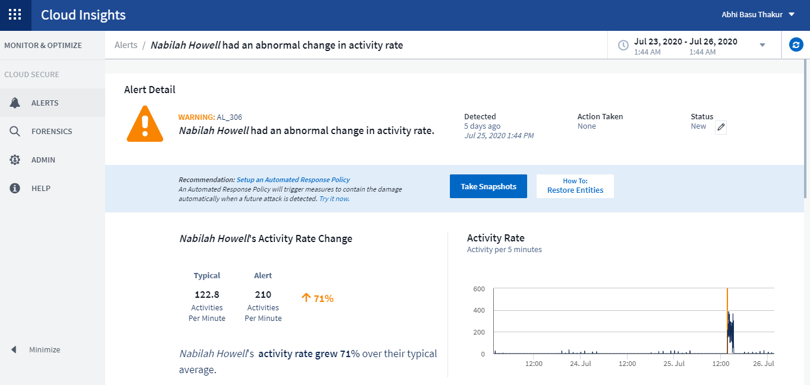
Mises à jour des mesures/compteurs
Les compteurs de capacité suivants sont disponibles pour une utilisation dans l'interface utilisateur Cloud Insights et l'API REST. Auparavant, ces compteurs étaient uniquement disponibles pour l'entrepôt de données / les rapports.
| Type d'objet | Compteur |
|---|---|
Stockage |
Capacité - capacité brute de réserve - défaillance brute |
Pool de stockage |
Capacité des données - capacité des données utilisées - Total des autres capacités - autre capacité utilisée - capacité totale - capacité brute - limite souple |
Volume interne |
Capacité des données - capacité des données utilisées - Total autre capacité - autre capacité utilisée - Total Clone Saved Capacity - Total |
Détection des attaques potentielles au Cloud Secure
Cloud Secure détecte désormais les attaques potentielles telles que les ransomwares. Cliquez sur une alerte dans la page de liste alertes pour ouvrir une page de détails présentant les éléments suivants :
-
Heure d'attaque
-
Activité associée de l'utilisateur et du fichier
-
Action entreprise
-
Informations supplémentaires pour aider à effectuer le suivi des violations de sécurité possibles
Page d'alertes montrant un potentiel d'attaque par ransomware :
Page détaillée d'une attaque par ransomware potentielle :
Abonnez-vous à Premium Edition via AWS
Pendant votre essai de Cloud Insights, vous pouvez "s'abonner vous-même" Via AWS Marketplace vers Cloud Insights Standard Edition ou Premium Edition. Auparavant, vous pouviez uniquement vous abonner automatiquement à AWS Marketplace pour l'édition Standard.
Widget Table amélioré
Le widget Tableau de bord/ressources comprend les améliorations suivantes :
-
Vue « écran divisé » : les widgets de tableau affichent l'objet/le regroupement sur le côté gauche et les données d'objet (attributs/métriques) sur la droite.

-
Regroupement d'attributs multiples : pour les données d'intégration (Kubernetes, ONTAP Advanced Metrics, Docker, etc.), vous pouvez choisir plusieurs attributs pour le regroupement. Les données sont affichées en fonction des attributs de regroupement/que vous choisissez.
Regroupement avec données d'intégration (affiché en mode Edition) :

-
Le regroupement des données d'infrastructure (stockage, EC2, VM, ports, etc.) se fait par un seul attribut, comme auparavant. Lors du regroupement par un attribut qui n'est pas l'objet, la table vous permet de développer la ligne du groupe pour voir tous les objets du groupe.
Regroupement avec des données d'infrastructure (affiché en mode d'affichage) :

Filtrage de metrics
Outre le filtrage des attributs d'un objet dans un widget, vous pouvez désormais également filtrer les metrics.

Lors de l'utilisation des données d'intégration (Kubernetes, ONTAP Advanced Data, etc.), le filtrage des mesures supprime les points de données individuels/non inégalés de la série de données tracées, contrairement aux données d'infrastructure (stockage, VM, ports, etc.), où les filtres fonctionnent sur la valeur agrégée de la série de données et peuvent potentiellement supprimer l'objet entier du graphique.

Données de compteur avancées ONTAP
Cloud Insights tire parti de la Advanced Counter Data propre à ONTAP, qui fournit une multitude de compteurs et de metrics collectés auprès des périphériques ONTAP. Les données de compteur avancé ONTAP sont disponibles pour tous les clients NetApp ONTAP. Ces indicateurs permettent une visualisation personnalisée et étendue dans les widgets et tableaux de bord Cloud Insights.
Pour trouver les compteurs avancés ONTAP, recherchez « netapp_ontap » dans la requête du widget et sélectionnez parmi les compteurs.

Vous pouvez affiner votre recherche en saisissant d'autres parties du nom du compteur. Par exemple :
-
lif
-
agrégat
-
offbox_vscan_server
-
entre autres


Veuillez noter ce qui suit :
-
La collecte de données avancée sera activée par défaut pour les nouveaux collecteurs de données ONTAP. Pour activer la collecte de données avancées pour vos collecteurs de données ONTAP existants, modifiez le collecteur de données et développez la section Configuration avancée.
-
La collecte avancée des données n'est pas disponible pour les systèmes ONTAP 7-mode.
Tableaux de bord avancés
Cloud Insights est fourni avec une variété de tableaux de bord prédéfinis pour vous aider à commencer à visualiser les compteurs avancés ONTAP pour des sujets tels que Aggregate Performance, Volume Workload, Processor Activity, et bien plus encore. Si au moins un collecteur de données ONTAP est configuré, il est possible de les importer à partir de la galerie de tableaux de bord sur n'importe quelle page de liste de tableaux de bord.
En savoir plus >>
Vous trouverez plus d'informations sur les données avancées de ONTAP dans les liens suivants :
-
https://mysupport.netapp.com/site/tools/tool-eula/netapp-harvest (Remarque : vous devez vous connecter au service de support NetApp)
Menu stratégies et violations
Les politiques de performance et les violations se trouvent désormais dans le menu alertes. Les règles et les violations de la fonctionnalité sont inchangées.
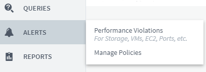
Agent Telegraf mis à jour
L'agent pour l'ingestion de données d'intégration de telegraf a été mis à jour vers "version 1.14", qui inclut les correctifs de bogues, les correctifs de sécurité, et les nouveaux plugins.
Remarque : lors de la configuration d'un collecteur de données Kubernetes sur la plateforme Kubernetes, une erreur « HTTP status 403 interdit » s'affiche dans le journal, en raison des autorisations insuffisantes dans l'attribut « clusterrole ».
Pour contourner ce problème, ajoutez les lignes mises en évidence suivantes à la section rules: du rôle cluster noeud final-accès, puis redémarrez les modules Telegraf.
rules: - apiGroups: - "" - apps - autoscaling - batch - extensions - policy - rbac.authorization.k8s.io attributeRestrictions: null resources: - nodes/metrics - nodes/proxy <== Add this line - nodes/stats - pods <== Add this line verbs: - get - list <== Add this line
Juin 2020
Rapport d'erreurs du Data Collector simplifié
Le fait de signaler une erreur du collecteur de données est plus simple grâce au bouton Send Error Report de la page Data Collector. Cliquer sur le bouton envoie des informations de base sur l'erreur à NetApp et invite l'utilisateur à enquêter sur le problème. Une fois enfoncé, Cloud Insights reconnaît que NetApp a été notifié et que le bouton Rapport d'erreur est désactivé pour indiquer qu'un rapport d'erreur relatif à ce collecteur de données a été envoyé. Le bouton reste désactivé jusqu'à ce que la page du navigateur soit actualisée.

Améliorations des widgets
Les améliorations suivantes ont été apportées aux widgets du tableau de bord : Ces améliorations sont considérées comme une fonctionnalité d'aperçu et peuvent ne pas être disponibles pour tous les environnements Cloud Insights.
-
Nouveau sélecteur d'objets/de mesures : les objets (stockage, disque, ports, nœuds, etc.) et les mesures associées (IOPS, latence, nombre de CPU, etc.) sont à présent disponibles dans des widgets dans une liste déroulante unique avec une fonctionnalité de recherche puissante. Vous pouvez entrer plusieurs termes partiels dans la liste déroulante. Cloud Insights répertoriera tous les metrics d'objets répondant à ces termes.
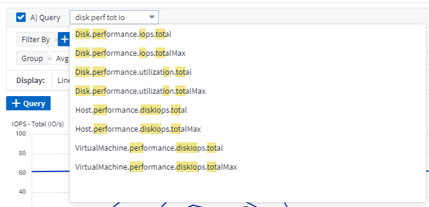
-
Regroupement de plusieurs balises : lorsque vous utilisez des données d'intégration (Kubernetes, etc.), vous pouvez regrouper les données par plusieurs balises/attributs. Par exemple, somme de l'utilisation de la mémoire par le namespace Kubernetes et le nom du conteneur.

À mai 2020
Génération de rapports des rôles utilisateur
Les rôles suivants ont été ajoutés pour le reporting :
-
Consommateurs Cloud Insights : peut exécuter et afficher des rapports
-
Auteurs Cloud Insights : peut exécuter les fonctions client ainsi que créer et gérer des rapports et des tableaux de bord
-
Administrateurs Cloud Insights : permet d'effectuer les fonctions auteur ainsi que toutes les tâches administratives
Mises à jour Cloud Secure
Cloud Insights inclut les récentes modifications Cloud Secure suivantes.
Dans la page Forensics > Activity Forensics, nous proposons deux vues pour analyser et étudier l'activité des utilisateurs :
-
Vue d'activité axée sur l'activité des utilisateurs (quelle opération ? Où sont-elles effectuées ?)
-
La vue entités, centrée sur les fichiers auxquels l'utilisateur a accédé.

De plus, la notification par e-mail d'alerte contient désormais un lien direct vers la page d'alerte.
Regroupement du tableau de bord
Le regroupement de tableaux de bord vous permet de mieux "gestion des tableaux de bord" qui vous concernent. Vous pouvez ajouter des tableaux de bord associés à un groupe pour gérer en une seule étape la gestion de votre stockage ou de vos machines virtuelles, par exemple.
Les groupes sont personnalisés par utilisateur, de sorte que les groupes d'une personne peuvent être différents de ceux d'une autre personne. Vous pouvez avoir autant de groupes que vous le souhaitez, avec autant de tableaux de bord dans chaque groupe que vous le souhaitez.

Épinglage du tableau de bord
Vous pouvez épingler les tableaux de bord pour que les favoris apparaissent toujours en haut de la liste.

Mode TV et actualisation automatique
"Mode TV et actualisation automatique" permet d'afficher les données en temps quasi réel sur un tableau de bord ou une page de ressources :
-
Le mode TV offre un affichage sans encombré; le menu de navigation est caché, offrant plus d'espace d'écran pour l'affichage de vos données.
-
Données dans les widgets des tableaux de bord et des pages d'accueil des ressources actualisation automatique selon un intervalle de rafraîchissement (aussi peu que toutes les 10 secondes) déterminé par la plage de temps du tableau de bord sélectionnée (ou la plage de temps du widget, si définie pour remplacer l'heure du tableau de bord).
Combiné, le mode TV et le rafraîchissement automatique offrent une vue en direct de vos données Cloud Insights, parfait pour des démonstrations fluides ou une surveillance en interne.
Avril 2020
Nouveaux choix de plage de temps du tableau de bord
Les choix de plage horaire pour les tableaux de bord et les autres pages Cloud Insights incluent désormais les dernières 1 heure et les 15 dernières minutes.
Mises à jour Cloud Secure
Cloud Insights inclut les récentes modifications Cloud Secure suivantes.
-
Amélioration de la reconnaissance des modifications apportées aux métadonnées des fichiers et des dossiers pour détecter si l'utilisateur a modifié l'autorisation, le propriétaire ou la propriété du groupe.
-
Exporter le rapport d'activité utilisateur au format CSV.
Cloud Secure contrôle et vérifie toutes les opérations d'accès des utilisateurs aux fichiers et aux dossiers. L'audit d'activité vous permet de vous conformer aux politiques de sécurité internes, de répondre aux exigences de conformité externes telles que PCI, le RGPD et HIPAA, et de mener des enquêtes sur les failles de données et les incidents de sécurité.
Heure par défaut du tableau de bord
La plage horaire par défaut des tableaux de bord est désormais de 3 heures au lieu de 24 heures.
Optimisation des temps d'agrégation
Optimisé "agrégation de temps" Les intervalles dans les widgets de séries chronologiques (graphiques ligne, Spline, zone et zone empilée) sont plus fréquents pour les plages de temps tableau de bord/widget 3 heures et 24 heures, ce qui permet d'accélérer la saisie des données.
-
la plage de temps de 3 heures optimise jusqu'à un intervalle d'agrégation de 1 minute. Auparavant, c'était 5 minutes.
-
la plage horaire de 24 heures optimise jusqu'à un intervalle d'agrégation de 30 minutes. Auparavant, c'était 1 heure.
Vous pouvez quand même remplacer l'agrégation optimisée en définissant un intervalle personnalisé.
Format automatique de l'unité d'affichage
Dans la plupart des widgets, Cloud Insights connaît l'unité de base dans laquelle afficher les valeurs, par exemple mégaoctets, milliers, percent, millisecondes (ms), etc., et maintenant "formate automatiquement" le widget vers l'unité la plus lisible. Par exemple, une valeur de données de 1,234,567,890 octets serait formatée automatiquement sur 1.23 gibioctets. Dans de nombreux cas, Cloud Insights connaît le format le plus adapté aux données acquises. Dans les cas où le meilleur format n'est pas connu, ou dans les widgets où vous souhaitez remplacer le formatage automatique, vous pouvez choisir le format de votre choix.

Importer des annotations à l'aide de l'API
Grâce à la puissante API de Cloud Insights Premium Edition, vous pouvez désormais "importer des annotations" Et les affecter à des objets à l'aide d'un fichier .CSV. Vous pouvez également importer des applications et affecter des entités métiers de la même manière.

Sélecteur de widget simplifié
L'ajout de widgets aux tableaux de bord et aux pages d'accueil des ressources est plus simple grâce à un nouveau sélecteur de widgets qui affiche tous les types de widgets dans une seule vue tout-en-un. Ainsi, l'utilisateur n'a plus besoin de faire défiler une liste de types de widgets pour trouver celui qu'il souhaite ajouter. Les widgets associés sont coordonnés par couleur et regroupés par proximité dans le nouveau sélecteur.

Février 2020
API avec édition Premium
Cloud Insights Premium Edition est livré avec un "Puissance des API" Il peut être utilisé pour intégrer Cloud Insights à d'autres applications, telles que CMDB ou d'autres systèmes de gestion des tickets.
Des informations détaillées basées sur swagger sont disponibles dans Admin > API accès, sous le lien API Documentation. Swagger fournit une brève description et des informations d'utilisation de l'API, et vous permet de tester chaque API dans votre environnement.
L'API Cloud Insights utilise des jetons d'accès pour fournir un accès basé sur les autorisations aux catégories d'API, telles QUE LES RESSOURCES ou LES COLLECTIONS.

Interrogation initiale après ajout D'Un Data Collector
Auparavant, après avoir configuré un nouveau collecteur de données, Cloud Insights interroge immédiatement le collecteur de données pour recueillir Inventory data, mais il attend jusqu'à ce que l'intervalle d'interrogation de performance configuré (généralement 15 minutes) collecte des données initiales performance. Il attende alors un autre intervalle avant de lancer le second sondage de performance, ce qui signifie qu'il faudrait jusqu'à 30 minutes avant l'acquisition de données significatives à partir d'un nouveau collecteur de données.
Collecteur de données "interrogation" a été grandement améliorée, de sorte que le sondage initial de performance se produit immédiatement après le sondage de l'inventaire, le deuxième sondage de performance se produisant dans quelques secondes après la fin du premier sondage de performance. Cela permet à Cloud Insights de commencer à afficher rapidement des données utiles sur les tableaux de bord et les graphiques.
Ce comportement d'interrogation se produit également après la modification de la configuration d'un collecteur de données existant.
Duplication simplifiée des widgets
Il est plus simple que jamais de créer une copie d'un widget depuis le tableau de bord ou une page d'accueil. En mode Tableau de bord, cliquez sur le menu du widget et sélectionnez Dupliquer. L'éditeur de widget est lancé, rempli avec la configuration du widget original et avec un suffixe "copie" dans le nom du widget. Vous pouvez facilement apporter les modifications nécessaires et enregistrer le nouveau widget. Le widget sera placé au bas de votre tableau de bord et vous pouvez le positionner selon les besoins. N'oubliez pas d'enregistrer votre tableau de bord lorsque toutes les modifications sont terminées.

Authentification unique (SSO)
Avec Cloud Insights Premium Edition, les administrateurs peuvent activer "Authentification unique" (SSO) accès à Cloud Insights pour tous les utilisateurs de leur domaine d'entreprise, sans avoir à les inviter individuellement. Avec SSO activé, tous les utilisateurs disposant de la même adresse e-mail de domaine peuvent se connecter à Cloud Insights à l'aide de leurs informations d'identification d'entreprise.
|
|
SSO n'est disponible que dans Cloud Insights Premium Edition et doit être configuré avant de pouvoir être activé pour Cloud Insights. La configuration SSO inclut "Fédération des identités" Par le biais de NetApp Cloud Central. La fédération permet aux utilisateurs de Single Sign-on d'accéder à vos comptes NetApp Cloud Central à l'aide des identifiants de votre annuaire d'entreprise. |
Janvier 2020
Documentation swagger pour l'API REST
Swagger explique chaque API REST disponible dans Cloud Insights, ainsi que son utilisation et sa syntaxe. Pour plus d'informations sur les API Cloud Insights, consultez le "documentation".
Barre de progression Tutoriels de fonctionnalités
La liste de contrôle des didacticiels de fonctionnalités a été déplacée vers la bannière supérieure et comporte désormais un indicateur de progression. Des didacticiels sont disponibles pour chaque utilisateur jusqu'au congédié et sont toujours disponibles dans Cloud Insights "documentation".

Modifications de l'unité d'acquisition
Lors de l'installation d'une unité d'acquisition (au) sur un hôte ou une VM portant le même nom qu'un au déjà installé, Cloud Insights garantit un nom unique en ajoutant le nom de l'UA à «_1 », «_2 », Etc. C'est également le cas lors de la désinstallation et de la réinstallation d'un au à partir de la même machine virtuelle sans le retirer d'abord de Cloud Insights. Vous voulez un autre nom au ? Aucun problème ; l'au peut être renommé après l'installation.
Agrégation de temps optimisée dans les widgets
Dans les widgets, vous pouvez choisir entre un intervalle d'agrégation de temps optimisé ou un intervalle personnalisé que vous avez défini. L'agrégation optimisée sélectionne automatiquement l'intervalle de temps approprié en fonction de la plage de temps sélectionnée sur le tableau de bord (ou de la plage de temps du widget, si l'on annule l'heure du tableau de bord). L'intervalle change dynamiquement au fur et à mesure de la modification de la plage de temps du tableau de bord ou du widget.
Processus simplifié « mise en route avec Cloud Insights »
Pour faciliter et simplifier la configuration initiale, le processus de mise en route de Cloud Insights a été simplifié. Il vous suffit de sélectionner un collecteur de données initial et de suivre les instructions. Cloud Insights vous fera découvrir la configuration du collecteur de données et tout agent ou unité d'acquisition requis. Dans la plupart des cas, il importe même un ou plusieurs tableaux de bord initiaux afin de pouvoir commencer à analyser rapidement votre environnement (mais permettez à 30 Cloud Insights de collecter des données significatives).
Autres améliorations :
-
L'installation de l'unité d'acquisition est plus simple et plus rapide.
-
Les choix de collecteurs de données alphabétiques facilitent la recherche de celui que vous recherchez.
-
Les instructions de configuration améliorées du Data Collector sont plus faciles à suivre.
-
Les utilisateurs expérimentés peuvent ignorer le processus de mise en route en cliquant sur un bouton.
-
Une nouvelle barre de progression vous indique où vous êtes dans le processus.
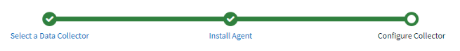
Décembre 2019
L'entité métier peut être utilisée dans les filtres
Les annotations d'entité métier peuvent être utilisées dans des filtres pour les requêtes, les widgets, les règles de performance et les pages d'arrivée.
Informations détaillées disponibles pour les widgets à valeur unique et jauge, ainsi que pour tous les widgets ajoutés par « tous »
Un clic sur la valeur dans un widget à valeur unique ou jauge ouvre une page de requête affichant les résultats de la première requête utilisée dans le widget. En outre, si vous cliquez sur la légende d'un widget dont les données sont rassemblées par « All », une page de requête s'affiche également avec les résultats de la première requête utilisée dans le widget.
Période d'essai prolongée
Les nouveaux utilisateurs qui souhaitent bénéficier d'une version d'évaluation gratuite de Cloud Insights disposent désormais de 30 jours pour évaluer le produit. Il s'agit d'une augmentation par rapport à la période d'essai de 14 jours précédente.
Calcul de l'unité gérée
Le calcul des unités gérées (UM) dans Cloud Insights a été modifié comme suit :
-
1 unité gérée = 2 hôtes (toute machine virtuelle ou physique)
-
1 unité gérée = 4 To de capacité non formatée des disques physiques ou virtuels
Cette modification double de manière efficace la capacité de l'environnement que vous pouvez surveiller à l'aide de votre abonnement Cloud Insights existant.
Novembre 2019
Editions la table de comparaison des fonctionnalités
La page Admin > abonnement "tableau comparatif" A été mis à jour pour répertorier les ensembles de fonctionnalités disponibles dans les éditions Basic, Standard et Premium de Cloud Insights. NetApp améliore constamment ses services clouds. Aussi, consultez régulièrement cette page pour trouver l'édition qui répond le mieux à l'évolution de vos besoins.
Octobre 2019
Création de rapports
"Rapport Cloud Insights" est un outil de veille stratégique qui vous permet d'afficher des rapports prédéfinis ou de créer des rapports personnalisés. Avec le système de rapports, vous pouvez effectuer les tâches suivantes :
-
Exécuter un rapport prédéfini
-
Créer un rapport personnalisé
-
Personnalisez le format du rapport et la méthode de livraison
-
Planifiez l'exécution automatique des rapports
-
Rapports par e-mail
-
Utilisez des couleurs pour représenter des seuils sur les données
Les rapports Cloud Insights peuvent générer des rapports personnalisés dans des domaines tels que la refacturation, l'analyse de consommation et la prévision. Ils peuvent également répondre à des questions comme :
-
Quel inventaire ai-je à faire ?
-
Où est mon inventaire?
-
Qui utilise nos ressources ?
-
Quelle est la refacturation du stockage alloué à une unité commerciale ?
-
Combien de temps me faut-il pour acquérir de la capacité de stockage supplémentaire ?
-
Les unités commerciales sont-elles alignées sur les niveaux de stockage appropriés ?
-
Dans quelle mesure les allocations de stockage sont-elles changeantes en un mois, un trimestre ou une année ?
Le reporting est disponible avec Cloud Insights Édition Premium.
Améliorations apportées à Active IQ
"Risques Active IQ" sont désormais disponibles sous forme d'objets pouvant être interrogés ainsi que dans les widgets de tableau de bord. Les attributs d'objet risques suivants sont inclus : * Catégorie * Catégorie d'atténuation * impact potentiel * détail du risque * gravité * Source * stockage * nœud de stockage * Catégorie d'interface utilisateur
Septembre 2019
Nouveaux widgets Gauge
Deux nouveaux widgets permettent d'afficher des données à valeur unique sur vos tableaux de bord dans des couleurs accrocheuses en fonction des seuils spécifiés. Vous pouvez afficher les valeurs à l'aide d'une jauge volumique ou d'une jauge à puce. Les valeurs qui se trouvent dans la plage d'avertissement sont affichées en orange. Les valeurs de la plage critique sont affichées en rouge. Les valeurs inférieures au seuil d'avertissement sont affichées en vert.


Formatage conditionnel des couleurs pour le widget valeur unique
Vous pouvez maintenant afficher le widget valeur unique avec un arrière-plan coloré basé sur les seuils que vous avez définis.

Inviter des utilisateurs pendant l'intégration
À tout moment pendant le processus d'intégration, vous pouvez cliquer sur Admin > User Management > +User pour inviter d'autres utilisateurs à votre environnement Cloud Insights. Sachez que les utilisateurs disposant de rôles invité ou utilisateur bénéficieront d'un plus grand avantage une fois l'intégration terminée et les données recueillies.
Amélioration de la page de détails du Data Collector
La page de détails du collecteur de données a été améliorée pour afficher les erreurs dans un format plus lisible. Les erreurs sont désormais affichées dans un tableau distinct de la page, chaque erreur étant affichée sur une ligne distincte en cas d'erreurs multiples pour le collecteur de données.
Août 2019
En bref Collecteurs de données disponibles
Lors de l'ajout de collecteurs de données à votre environnement, vous pouvez définir un filtre pour afficher uniquement les collecteurs de données disponibles pour vous en fonction de votre niveau d'abonnement, ou de tous les collecteurs de données.
Intégration d'ActiveIQ
Cloud Insights collecte les données d'ActiveIQ NetApp, qui fournit une série de visualisations, d'analyses et d'autres services de support associés à des clients NetApp et à leurs systèmes matériels/logiciels. Cloud Insights s'intègre aux systèmes de gestion des données ONTAP. Voir "Active IQ" pour en savoir plus.
Juillet 2019
Améliorations tableau de bord
Les tableaux de bord et les widgets ont été améliorés suite aux modifications suivantes :
-
En plus de somme, min, Max et AVG, Count est maintenant une option de reprise dans les widgets à valeur unique. Lors de la mise en service par “nombre”, Cloud Insights vérifie si un objet est actif ou non et ajoute uniquement les objets actifs au comptage. Le nombre qui en résulte est sujet à l'agrégation et aux filtres.
-
Dans le widget valeur unique, vous avez maintenant la possibilité d'afficher le nombre obtenu avec 0, 1, 2, 3 ou 4 décimales.
-
Les graphiques en ligne affichent une étiquette d'axe et des unités lorsqu'un seul compteur est tracé.
-
L'option Transform est disponible pour les données d'intégration de services maintenant dans tous les widgets de séries chronologiques pour toutes les mesures. Pour tout compteur ou métrique d'intégration de services (Telegraf) dans les widgets de séries chronologiques (ligne, Spline, zone, zone piratée), vous avez le choix entre la façon dont vous voulez "Transformer les valeurs". Aucun (valeur d'affichage telle qu'elle est), somme, Delta, cumul, etc
Rétrograder à l'édition de base
La mise à niveau vers l'édition de base échoue et un message d'erreur s'affiche si aucun périphérique NetApp disponible n'a été configuré pour mener à bien un sondage au cours des 7 derniers jours.
Collecte des mesures Kube-State
Le "Collecteur de données Kubernetes" Désormais, la collecte d'objets et de compteurs à partir du plug-in kube-State-metrics augmente considérablement le nombre et la portée des mesures disponibles pour la surveillance dans Cloud Insights.
Juin 2019
Éditions Cloud Insights
Cloud Insights est disponible dans différentes éditions pour répondre à votre budget et aux besoins de votre entreprise. Les clients NetApp qui disposent d'un compte de support NetApp actif peuvent profiter de 7 jours de conservation des données et d'un accès aux collecteurs de données NetApp grâce à la version gratuite Basic Edition, ou encore bénéficier d'une conservation supérieure des données, de l'accès à tous les collecteurs de données pris en charge, au support technique par un expert et bien plus encore grâce à Standard Edition. Pour plus d'informations sur les fonctionnalités disponibles, consultez la rubrique NetApp "Cloud Insights" le site.
Nouveau collecteur de données d'infrastructure : NetApp HCI
-
"Centre virtuel NetApp HCI" A été ajouté comme collecteur de données d'infrastructure. Le collecteur de données HCI Virtual Center collecte les informations sur l'hôte NetApp HCI et requiert des privilèges en lecture seule sur tous les objets du Virtual Center.
Notez que le collecteur de données HCI fait l'acquisition auprès du Virtual Center HCI uniquement. Pour collecter les données à partir du système de stockage, vous devez également configurer NetApp "SolidFire" collecteur de données.
À mai 2019
Nouveau collecteur de données de service : Kapacitor
-
"Kapacitor" a été ajouté comme collecteur de données pour les services.
Intégration aux services via Telegraf
En plus de l'acquisition de données provenant de dispositifs d'infrastructure, tels que des commutateurs et du stockage, Cloud Insights collecte désormais des données de divers systèmes d'exploitation et services, en utilisant "Telegraf en tant qu'agent" pour la collecte des données d'intégration. Telegraf est un agent piloté par plug-in qui peut être utilisé pour collecter et signaler des mesures. Les plug-ins d'entrée sont utilisés pour recueillir les informations souhaitées dans l'agent en accédant directement au système/système d'exploitation, en appelant des API tierces ou en écoutant des flux configurés.
La documentation pour les intégrations actuellement prises en charge se trouve dans le menu de gauche sous référence et support.
Actifs Storage Virtual machine
-
Les SVM (Storage Virtual machines) sont disponibles sous forme de ressources dans Cloud Insights. Les SVM disposent de leurs propres pages d'accueil Asset, et peuvent être affichées et utilisées dans les recherches, les requêtes et les filtres. Les SVM peuvent également être utilisés dans les widgets du tableau de bord, ainsi que dans les annotations.
Exigences du système de l'unité d'acquisition réduites
-
Les besoins en processeur et mémoire du système pour le logiciel de l'unité d'acquisition (au) ont été réduits. Ces nouvelles exigences sont les suivantes :
Composant |
* Ancienne exigence* |
Nouvelle exigence |
Cœurs de processeurs |
4 |
2 |
Mémoire |
16 GO |
8 Go |
Autres plateformes prises en charge
-
Les plates-formes suivantes ont été ajoutées à celles actuellement "Pris en charge pour Cloud Insights":
Linux |
Répertoires de base |
CentOS 7.3 64 bits CentOS 7.4 64 bits CentOS 7.6 64 bits Debian 9 64 bits Red Hat Enterprise Linux 7.3 64 bits Red Hat Enterprise Linux 7.4 64 bits Red Hat Enterprise Linux 7.6 64 bits Ubuntu Server 18.04 LTS |
Microsoft Windows 10 64 bits Microsoft Windows Server 2008 R2 Microsoft Windows Server 2019 |
Avril 2019
Filtrer les machines virtuelles par balises
Lors de la configuration des collecteurs de données suivants, vous pouvez filtrer pour inclure ou exclure des machines virtuelles de la collecte de données en fonction de leurs étiquettes ou étiquettes.
Mars 2019
Notifications par e-mail pour les événements liés à un abonnement
-
Vous pouvez sélectionner des destinataires pour l'e-mail "notifications" lorsque des événements liés à l'abonnement se produisent, tels que l'expiration de l'essai à venir ou les modifications du compte auquel vous êtes abonné. Vous pouvez choisir des destinataires pour ces notifications parmi les suivantes :
-
Tous les propriétaires de compte
-
Tous les administrateurs
-
Adresses e-mail supplémentaires que vous spécifiez
-
Tableaux de bord supplémentaires
-
Voici la nouvelle version d'AWS "tableaux de bord" ont été ajoutés à la galerie et sont disponibles pour l'importation :
-
Administrateur AWS - quels EC2 sont le plus sollicités ?
-
Performances de l'instance AWS EC2 par région
-
Février 2019
Collecte depuis les comptes enfants AWS
-
Prise en charge de Cloud Insights "Collection de comptes enfants AWS" dans un seul collecteur de données. Votre environnement AWS doit être configuré de sorte que Cloud Insights puisse collecter des données auprès de comptes enfants.
Dénomination du Data Collector
-
Les noms de Data Collector peuvent maintenant inclure des points (.), des tirets (-) et des espaces ( ) en plus de lettres, des chiffres et des traits de soulignement. Les noms ne peuvent pas commencer ou se terminer par un espace, un point ou un tiret.
Unité d'acquisition pour Windows
-
Vous pouvez configurer une unité d'acquisition Cloud Insights sur un serveur/machine virtuelle Windows. Consultez Windows "conditions préalables" avant d'installer le "Logiciel de l'unité d'acquisition".
Janvier 2019
Le champ « propriétaire » est plus lisible
-
Dans les listes de tableau de bord et de requête, les données du champ « propriétaire » étaient auparavant une chaîne d'ID d'autorisation au lieu d'un nom de propriétaire convivial. Le champ « propriétaire » affiche désormais un nom de propriétaire plus simple et plus lisible.
Répartition de l'unité gérée sur la page d'abonnement
-
Pour chaque collecteur de données répertorié sur la page Admin > abonnement, vous pouvez maintenant voir une répartition des nombres d'unités gérées (UM) pour les hôtes et le stockage, ainsi que le total.
Décembre 2018
Amélioration du temps de chargement de l'interface utilisateur
-
Le temps de chargement initial de l'interface utilisateur Cloud Insights a été considérablement amélioré. Le temps d'actualisation de l'interface utilisateur bénéficie également de cette amélioration dans les cas où les métadonnées sont chargées.
Edition groupée de collecteurs de données
-
Vous pouvez modifier les informations de plusieurs collecteurs de données en même temps. Sur la page observabilité > Collectors, sélectionnez les collecteurs de données à modifier en cochant la case à gauche de chaque et cliquez sur le bouton Bulk actions. Choisissez Modifier et modifiez les champs nécessaires.
Les collecteurs de données sélectionnés doivent être du même fournisseur et du même modèle et résident sur la même unité d'acquisition.
Des pages d'assistance et d'abonnement sont disponibles pendant l'intégration
-
Pendant le flux de travail d'intégration, vous pouvez accéder aux pages aide > support et Admin > abonnement. Si vous retournez de ces pages, vous accédez au flux de travail d'intégration, à condition que vous n'ayez pas fermé l'onglet du navigateur.
Novembre 2018
Abonnez-vous via les équipes commerciales NetApp ou AWS Marketplace
-
L'abonnement et la facturation Cloud Insights sont désormais disponibles directement auprès de NetApp. Outre l'abonnement en libre-service disponible sur AWS Marketplace, Un nouveau lien Contact Sales apparaît sur la page Admin > abonnement. Pour les clients dont les environnements disposent d'au moins 1,000 unités gérées ou qui doivent en disposer, il est recommandé de contacter l'équipe de vente NetApp via le lien contacter.
Liens hypertexte d'annotations de texte
-
Les annotations de type texte peuvent désormais inclure des hyperliens.
Présentation de l'intégration
-
Cloud Insights propose désormais une présentation d'intégration pour le premier utilisateur (administrateur ou propriétaire du compte) à se connecter à un nouvel environnement. L'inspection vous permet d'installer une unité d'acquisition, de configurer un collecteur de données initial et de sélectionner un ou plusieurs tableaux de bord utiles.
Importer des tableaux de bord à partir de la Galerie
-
En plus de sélectionner des tableaux de bord pendant l'intégration, vous pouvez importer des tableaux de bord via tableaux de bord > Afficher tous les tableaux de bord et cliquer sur +depuis la galerie.
Duplication des tableaux de bord
-
La possibilité de dupliquer un tableau de bord a été ajoutée à la page de liste de tableau de bord comme un choix dans le menu d'options pour chaque tableau de bord, et sur la page principale d'un tableau de bord elle-même à partir du menu Save.
Menu des produits Cloud Central
-
Le menu vous permettant de basculer vers d'autres produits NetApp Cloud Central s'est déplacé en haut à droite de l'écran.